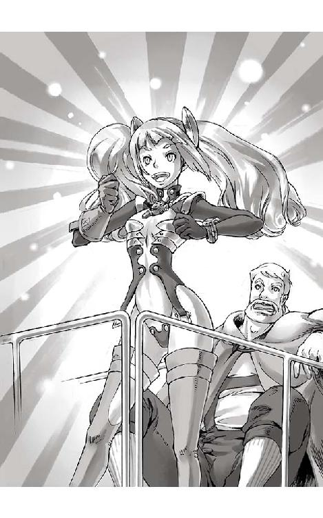

| 圧巻のグリモアール１ 蒸気伯爵と暗黒の竜 上巻 | |
| 町田 松三 | |
| Matsuzo Machida (2014) | |
| Tags: | 圧巻のグリモアール１ 蒸気伯爵と暗黒の竜 |
灰と野バラ文庫
圧巻のグリモアール １
『蒸気伯爵と暗黒の竜』 上巻
町田 松三
表紙イラスト・挿絵 加藤 美也子
目次
※この電子書籍は縦書きでレイアウトされています。
※ご覧になる環境、システムによって表示の差が認められることがあります。
嵐は七日七晩つづいた。
激しく揺れる天と地のはざまにはいくつもの竜巻が立ちのぼり、二つの巨大な影が交錯するたびに雲間を割って稲妻が走った。
容赦なく大地を切り裂いた衝撃は、山をえぐり、畑を荒野へと戻し、青い湖の形を変えた。
もつれ合った影は空と地上とに別れると、ふたたび勢いをつけて激突した。
牙がのどをかすめ、爪が肩に突き刺さる。
だが、またしても両者の死に物狂いの気迫はたがいに致命傷を負わせることが出来ず、次の一撃の態勢を整えようと距離をあけては隙をうかがいにらみ合った。
そしてまた、雄叫びとともに自らの命を剣に変えて打ちかかっていく。
二つの影は、二匹の巨大な竜であった。
鈍く黒光りする竜は強い力と鋼の鎧を持ち、黄金に輝く竜はしなやかな身体と空を自在に翔る力をもっていた。
滅ぼすものと護るものとの戦いは、熾烈を極めた。
無数の傷から己の血の一滴が失われるまで、この死闘が終わらぬことを運命づけられている二匹であった。
山の頂にたつ城のテラスでは美しい王女が騎士の亡骸を抱き、ひたすらに光が闇を打ち払う奇跡を信じて戦いを見守っていた。
すでに彼女は多くのものを失ったのである。
代々この地を治めてきた気高き家族も、彼女を慕う多くの民も、そして、かけがえのない最愛の人も。
すべての希望が打ち砕かれようとしている今、目の前にきらめく黄金の竜だけが、最後に残された望みの形そのものであった。
だが、王女の瞳には不安の影が広がりつつあった。
魔女の残した不吉な予言のとおり、神の正義は邪神を打ち払うことが出来ないのか、傷ついた金竜はしだいに劣性にまわりはじめ、黒竜はその勢いを増していった。
牙を咬み鳴らし、尾をしならせて相手を打ち据えるたび、黒竜は不気味な笑い声をもらした。そして、かろうじて攻撃をかわした金竜は苦しげに顔をしかめるのだ。
轟々と吹きすさぶ風の中、八日目の朝を迎える頃に勝負はつこうとしていた。
黒竜は山を背に四肢を踏ん張ると、残る力のすべてで体内を満たすように震えはじめた。まわりの大地はきしみ、無数の岩が、かげろうに浮かび上がっては砕け散っていく。
次の一撃が最後の一撃だと悟った金竜も、いま一度天高く舞い上がり、青い瞳を強く光らせた。
何者かに仕組まれた竜たちの代理戦争は、ついに決着の時を迎えようとしていたのだ。
金竜は光り輝く槍となった。
黒竜はむかえ討つ闇色の盾となった。
二つは、轟音とともに激突した。
金竜の爪が黒竜の鱗を切り裂いたとき、黒竜の尾が金竜の身体をまともに打ち据えた。
大地に叩きつけられた金竜は、黒竜の一撃を食らってついに倒れ臥した。
星の光に輝く黄金の鱗にはいく筋もの血が滴り、荒い呼吸は苦痛のうめきに変わった。
やがて、声は絶え金竜は光の珠となって砕け散った。
古の盟約により竜王から使わされた黄金の竜は、よく戦った。
覚悟を決めていた王女は、金竜のために涙を流し、その勇気に感謝した。
すべては終わったのだ。いま、このときに。
光が消え去ると黒竜は城へ近づき、ゆっくりとした動作で王女を振り返った。
目の前に立つのは名だたる竜であった。決して正道をたがわぬ偉大な竜であった。
だが、それなのになぜ、悪に身を堕とし弱きものを踏みにじろうとするのだろうか。
王女は騎士を床に寝かせると、立ち上がり、しずかに諸手をひろげた。黒竜の赤く光る目を正面から見据えたまま。
やがて、山の頂にある城は巨大な閃光につつまれた。
爆風はなにもかもをのみ込み、天を突き上げると黒雲すらことごとく断ち破った。
いつしか光が止み、世界がしんと静まりかえったとき、震える大地の影から終末の時を見つめていた人々は、愛する王女の命がはかなく散ったことを知ったのである。
その風景は、まさしく黙示録に記されるべき一幕であった。
そして、百年が過ぎた......。
今年八つになったばかりのラナは、その晩も同じ夢を見た。
夢は、昔じじ様が生きていたころ、眠るまえに膝の上で優しく語り聞かせてくれたおとぎ話だった。
しかし、目の前の光景は、すべてが現実のように鮮明で恐ろしかった。
ハッと身をすくませ大きな瞳をひらいた少女は、見なれた屋根裏の天井が目にとびこんできたとき、ようやく夢から覚めたことに気がついて安堵の息をもらした。
となりで眠っている母親はひどく疲れた寝顔をしていて、自分が起きたことにも気がつかなかった。ただ、日々の生活にやつれた手が優しく娘の腰を抱いているだけだ。
そんな母に毛布をかけなおし、物音を立てないようにベッドを降りたラナは、まだ夜が明けきらぬ朝もやの中、家の扉をそっと開けた。
月のない薄闇の空には、灰色の雲がものすごい早さで流れている。
ラナは羽織ったカーディガンの前を両手で押さえ、ひたひたと草の大地を踏んだ。
この季節、山から吹き下ろしてきた風がロジェ湖をわたって、ポラン村のはずれにある小さなわが家にも春の匂いを運んでくる。少し肌寒いその風が、ラナはとても好きだった。
こうして夜明け前に家をぬけ出したことを知れば、二人きりの家族である母から、きっとまた大目玉をくうだろう。
それでもこの時のラナは、どうしてもじっとしてはいられなかった。
後になって思いかえしてみれば、その晩は、やはり特別だったのだと思う。
ラナは冷たい風に息をはずませながら、丘の斜面を西にそびえる山へ向かって歩いた。
リルロックと呼ばれる険しい山は、この土地に生きる者たちにとって、美しきわが故郷の象徴であった。春になり白い雪化粧が落ちれば、木々には生命で満ち溢れた緑が芽吹き、草木の茂る広い大地をたくさんの花々が飾るはずだ。
しかし、その春がおとずれるのは、まだほんの少しだけ先のことであった。
リルロックの東側は山がえぐられ、岩壁の露出した高い絶壁になっていた。
断崖の中ほどにある岩の亀裂からは大きな滝がごうごうと流れ落ちていた。あまりに高いところから落ちてくる水は途中で霧となり、白いカーテンのように崖下に広がる滝つぼを覆い隠していた。滝つぼから流れた川はやがて森をぬけ、リルロックと村の間に横たわるロジェ湖へと注ぎこんでいるのだ。
ラナは途中にある石積みの壁に藁の屋根をかぶせて作られた小屋の横を通り過ぎた。小屋の中では、彼女が毎日世話をしている羊たちがよりそいあって眠っていた。
緑の斜面に散らばる大小の石を縫うように進んできたラナは、一番大きな石をのぼると、山頂の木々の間に立つ美しい古城を見上げた。
白く高い城壁は上にいくほどすらりと細くなり、その城壁がとりかこむ角には等間隔に丸い尖塔が並んでいた。そして、いくつもの郭が重なる大きな城郭の中央には、天に突き出たひときわ美しい天守があった。しかし、その部分は、何か強い力になぎ払われでもしたかのように、途中からばっさりと崩れ落ちているのである。
それでも、この巨大にして優雅な城塞を見れば、かつてこの地を治めていた貴族の力がどれほど大きかったのかがうかがい知れた。
この古城こそ、かつてリルロックを支配していたキール王の居城であった。
しかし、いまはただの廃墟にすぎない。
百年前、悪しき竜に蹂躙された時から、この地を護る偉大な領主は失われた。その後、わずかに生き残った村人たちは、悲しみに耐え辺境の夜を怖れながら、自分たちの力だけを頼りに村を復興してきたのである。
生まれたときから散々その苦労話を聞かされて育ったラナには、ずっと昔の豊かだった村の姿は、絵本の中に描かれたものでしか見たことがなかった。
少女が石の上で背伸びをすると、風は一時だけ勢いを弱めた。
風のやんだ耳もとで、誰かの声がささやいた。
驚いたラナは、あたりを見回した。
草原の石の上に立つ自分のほかには誰の姿もない。
だが、声はもう一度彼女の髪をゆらした。
間違いなく、自分は誰かに導かれてここまで来たのだとラナは思った。
声の主を探しあぐね、ふたたびリルロックの城へと目を向けたとき、ラナは不思議なものを見た。
破壊されたはずの天守が幻のように甦り、そのテラスに明かりが灯っていたのだ。
小さな胸の鼓動が高鳴った。
さっきまで時の流れに朽ち果てていた城が、絵本とまったく同じ姿をしていた。
尖塔の先には三角旗がはためき、城中の窓からは宝石のような光がこぼれていた。
おとぎ話のとおりの美しい城であった。
思わず愛らしい微笑みを浮かべた瞬間、ラナの身体は優しい光に浮かび上がった。
そして、気がついてみると、彼女は月光に輝く白い大理石のテラスにふわりと降り立っていた。
テラスにつながる最上階の広間は、小さな燭台が生み出すやわらかい明かりにつつまれ、長いカーテンがゆっくりと夜風にゆれていた。
背後には、世界を見渡せるほどの光景が広がっている。
驚きと不安で、ラナは息をのんだままその場に立ちつくした。
わなわなと震えだした彼女の耳もとで、また声が呼んだ。
ゆっくりと顔を上げると、カーテンの下にひとりの女が立っていた。
ゆるやかな白いドレスをまとい頭に小さなティアラを載せた女を、ラナは知っていた。
絵本に出てきたキール城の最後の領主、リリアーヌ王女だ。
王女はラナを安心させるように優しい笑みを浮かべると、小さくうなずいた。
地上に舞い降りた星々のような輝きをふりまいて歩みよる王女の身体は、どこかはかなく、悲しい幻のように見えた。
王女はラナの前で身をかがめると、細い指をのばして彼女の小さい手のひらをつかんだ。
黙ったまま間近に見上げる王女の顔は、この世の誰よりも美しかった。
言葉を失い、ただ茫然としているラナの頬に、王女はもう片方の手で触れた。
その指には、わずかだが人のぬくもりがあった。
ラナは、ようやく笑顔を浮かべた。
王女は嬉しそうにうなずくと、胸元から何かを取り出した。
キラリと光った小さな物を、そっとラナの手に握らせる。
ラナはそれを覗こうとしたとき、カーテンの下に現れた大きな影に気がついた。
驚いた彼女が見つめる先には、黒い甲冑に身を固めた不気味な騎士が立っていた。
黒く垂れたマントは生き物のようにうごめき、腰には大剣が下がっていた。
息をのんだラナが恐怖に身を強ばらせると、王女は彼女をかばうように立ち上がった。
その様子を見た騎士は静かに引き下がり、甲冑を鳴らしてカーテンの向こうへと消えていった。
やがて再び、ラナに向きなおった王女は、彼女を抱きよせ、震える小さなひたいにそっと口づけをした。
まばゆい光に視界を奪われたラナは、また身体がふわりと浮いた感覚におそわれた直後、もといた大きな石の上に倒れていた。
凪いでいた風がもどり、彼女の意識を呼び覚ました。
ラナは静かに上体を起こすと、確かめるように山頂の城を見上げた。
だが、そこにあったのは彼女が求めたものとは違う、いつもとかわらない廃墟と化した古城であった。
たった今見てきたものは幻だったのだろうか。
悪夢にうなされ、眠れなくなった自分が頭の中に描いた、ただの妄想だったのだろうか。
しかし、それは違っていた。
立ち上がり、カーディガンを合わせようとして、左手の中に感じた固い感触にラナは気がついた。
そっと指を開いてみる。
そこには、宝石のはめられた小さな銀のカギがにぎられていた。
ディダロスの摩天楼は、今夜も深い霧をしたがえてそびえ立っている。
霧と言っても気候によって生じたものではない。街にひしめく石と鉄骨が融合したモダンな建造物群と、血管のように張りめぐらされた大小の鉄パイプ。それらの、いたるところから噴き出す蒸気こそが、この霧の正体だ。
ディダロス王国は、内海からつづくラクリムの大河と、天然の要害とも言えるギダの山脈がぶつかる、恵まれた丘陵地帯につくられた巨大な城塞都市国家であった。
幾重にも連なる城壁の上に建つ人形をした王城は、切り立った崖の一部と同化し、さながら断崖の玉座に寄りかかった巨人のごとき外観をしていた。
最先端の科学技術で息づく飽食の大国は、日が沈んだあとも煌々と明るさを増すガス灯に照らされ眠らない夜をむかえていた。
真夜中の十二時をさすセンタータワーの大時計を見上げながら、男は片足をガーゴイルの彫像の肩にかけ、その時がくるのを待っていた。
ゆるく風になびいたスカーフで口元を隠し、垂直尾翼を兼ねた飾り着きの飛行帽には光学支援装置の仕込まれたゴーグルが下がっている。屈強な身体をつつむ濃い紫色をした軍の装甲外套は、ごく一部の高級将校だけが着用を許されている特別製だ。さらに、その両肩には大きな機械式の背嚢をかついでいた。
男はゴーグルの暗視機能を調整しながら、鷹のような目で眼下の街並みを見渡した。
その後ろでは、黒い燕尾服を着たせむし男が、じっと影のようにひかえている。
「このままでは今夜も空振りだぞ、ガルドーニ」
「はい、旦那様」
「せっかく用意してやったエサだが、少々釣りばりがでかすぎたのではないか？」
「いいえ、ご考案された作戦は完璧です。それに野良犬どもも、そろそろ腹を空かせている頃。今宵こそは、きっと姿を現すことにございましょう」
「そうか。ならば、もう少しだけ待ってみるか」
「御意」
旦那様と呼ばれた男が、視線を北の上流階級の貴族たちが暮らすノブレント地区に向けたとき、待ちに待っていた異変が起こった。
ボカンッ！ と大きな爆発音と同時に、もくもくと黒煙が上がったのだ。
「おお！」
男は満面の笑みを浮かべながら前のめりに首をのばした。
「のろしだ、奴らめワナに引っかかったぞ！」
爆発が起きたのはノブレント地区から南へ向かう高架線路のわきにある、今は使われていない資材小屋であった。次の瞬間、その横の線路を一台の装甲車両が轟音を響かせながら爆走してきた。
「ゲルハルト様」
「どうやらポイントの切り替えもうまくいってるようだな。よし、お前たちはポルックスを連れて先回りしろ。私は背後から遊撃をかける」
「ははっ」
せむし男に見送られ、男はふわりと空中へ跳躍して背中のロケット式飛行翼に点火した。
一気に加速し、火の玉となって急上昇していく。
十分な高度を得たところで背嚢の側面から半透明の翼が勢いよく飛び出すと、貴重なクラウンビートルの羽から加工された二枚の翼が振動を始め、速度を殺さずに揚力を発生させた。
あざやかに障害物を避けつつ、ゲルハルト・フォン・ツェンダー伯爵は目標の装甲車両へ向かって飛んで行った。
逃走する装甲車両は激しい煙の尾を引きながら、地上数十メートルの高さに交差する木組みの線路を走っていく。
分厚い鉄板で何重にも補強し、回転式の銃座まで備え付けられた中型蒸気機関車は、まさにギャングどもが誇る自走戦車へと改造されていた。
そして、その後方から王立警察隊の駆る警備機関車が鋭い警笛を鳴らして現れた。
警備機関車の上に躍り出た一人の隊員が逃走車輌のはるか前方へ向かって手旗信号を振ると、前もって待機していた別の警察官が敵の銃弾の雨の中、全体重をかけて途中のポイントを切り替えた。
命からがら飛び退いた警察官の横をギャングの戦車が通過する。つづいて同じ路線に合流した警備機関車が通り過ぎた。あとは頼んだぞー、と叫ぶ勇敢な仲間にむかって、警備機関車に乗った隊員たちもわいのわいのと手を振って応える。
窓から顔を出し短機関銃を乱射するギャングたち。それに負けじと、警察隊もライフルで応戦する。ちゃんと狙っていないのか、それともちゃんと狙っても当たらないのか、不夜城の空に轟く銃撃戦の音は、無意味に威勢だけが良く、捕り物を盛り上げる以外に何の役にも立ってはいなかった。
「はは、なんて奴らだ」
伯爵は楽しそうに笑うと、自分も派手な宴会に加わるべく急降下にうつった。
天から流れ落ちる彗星のごとくキラリと光った人間ロケットは、線路すれすれで機首を起こし、大きく旋回して装甲車両へと迫った。
真横から一気に飛来してくる新手を回転銃座に座る射撃手が発見した。
「か、頭、奴だ！ 蒸気伯爵だ！」
指を差して悲鳴を上げる。
「なんだ、うるせえな！」
射撃手は弾幕を張ろうと慌てて銃座を回頭させるが間に合うはずもなく、ゴーグルの照準を目標に合わせていたツェンダー伯爵は、腰に下げた特殊閃光弾をポロポロと投下した。
拳ほどの大きさの爆弾は標的に命中するなりものすごい光を放った。
「うわああ！」
「ぐえぇ！」
パパパッ、と連発したストロボに視界を奪われたギャングたちは慌てふためきながら絶叫し、マヌケにもゴーグルの上から目をこすった。
「おおお！」
見事にすれちがいざまの一撃をヒットさせ、再びロケットを点火して急上昇していく我らが隊長の雄姿に警察隊は沸き上がった。
「今だ、一気に追いつめるぞ！」
警備機関車の指揮を任されているゴットン副長が叫んだ。
あふれんばかりに石炭がくべられ、釜の圧力を限界まで押し上げた警察隊の機関車は、火花を散らして速度を上げた。
「頭、このままじゃヤベえ！」
「どうしよう、逃げ切れないよ！」
パニックを起こし、せまい車内でぶつかり合うギャングたちが弱音を吐いた。
「馬鹿野郎、それでも天下に名を馳せる黒熊一家の団員か！ ピーチクパーチクうろたえるんじゃあねえ！」
激しくゆれる逃走車輌のコクピットで、腕を組んだまま仁王立ちしていた巨漢が子分たちをどやしつけた。豪快な黒ヒゲに隻眼を輝かせるこの男こそ、街道筋を荒らしまわる大盗賊団の首領、黒ヒゲのゴロンゴロンだ。
「野郎ども気合い入れろ！ 蒸気伯爵だか何だか知らねえが、こちとら人様のために命を張って大仕事を引き受けてんだ、相手が何者だろうと決して捕まるわけにゃあいかねえ。無事に逃げ切って、みんな一緒にお天道様をおがもうじゃねえか。いいな！」
「へ、へい！」
緩むのもすぐならば締めるのも簡単な、くたびれたパンツのゴムのような団結力で結ばれたギャング一味は、たちまち混乱から回復すると、再び警察隊に向けて反撃を開始した。
「空の索敵をおこたるな、奴はまた仕掛けてくるぞ！」
「へい！」
ゴロンゴロンは叫ぶと、自らも大型のライフル銃を抱えて上部のハッチから身を乗り出した。
走る線路の先に街の外へと続く西の大門が見えてきた。だが、案の定。ゲートの前では守備隊がバリケードを張り、今か今かと自分たちが来るのを待ち伏せしている。
だが、歴戦のゴロンゴロンは、その警察隊の大軍を見てほくそ笑んだ。
これも予定通りであった。自分たちはゲートの直前であらかじめ仕掛けておいた装置を作動させ、線路のポイントを切り替える。南西へと走るそのレールは、もう使われることのなくなった古い炭坑へ続くルートだが、炭坑からは街の外へと脱出できる道が今も無数に残っているのだ。
「もうちょっとだ野郎ども、さあ、ぶちかませぇ！」
ゴロンゴロンは発射速度の遅い大口径ライフルを天に向かって連射した。それに応えた子分たちも一斉に勢いを増し、残弾も気にせず撃ちまくる。
攻勢をかけたはずが、にわかに闘志を煽り立ててしまったことを感じ取った警察隊は、はからずもじりじりと圧倒されはじめた。
「フフ、やるじゃないか、さすが猪突猛進の黒熊一家。往生際の悪さも一流だな」
逃走車両の先端に描かれた黒い大熊の紋章を眺めて、ツェンダー伯爵は微笑んだ。
高度を上げ旋回をつづけている彼は、敵と警察隊との位置関係を確認した。その余裕綽々たる姿は、まさに獲物を仕留める直前の大鷹であった。
「ガルドーニ、そちらの準備は良いか？」
腕に内蔵された無線マイクに向かって伯爵は叫んだ。
すぐに耳元からザザザーと言う雑音に混じって、いつでもよろしゅうございます。と、相手の声が返ってきた。
「では第二波をかける。ネズミを追い込んだらフタを閉じろ」
「かしこまりました」
見下ろせば、尻に火がついた黒熊一家の逃走車輌は、全員が肩をいからせて身構えるゲートの守備隊を目前にして、カクッと九十度、左へ曲がった。
作戦通りだ。頭の弱い田舎ギャングはワハハと大笑いをしながら、崖の中腹に口を開けた黒い廃坑へと一目散に向かって行く。
ツェンダー伯爵は両手を腰に付けると、上体をひねり一気に急降下に入った。
「ハッ、ざまあ見やがれ、おまえたちに捕まるほどボケちゃいねえんだよ！」
大口を開けてあかんべーをしながら、ゴロンゴロンは大声で嘲笑した。
しかし、遠くに離れていく守備隊の警官たちは、誰もがこっちに向かっておかしそうに手を振っているではないか。
「あ？」
その様子をいぶかしく思ったゴロンゴロンが笑顔を張り付かせた時、ふたたび天から轟音が近づいて来た。
「あ！」
白い尾を引き、真っ直ぐにこちらへ突っ込んでくる人間ロケット。
前方を振り向けば、廃坑の入口はすぐそこまで迫っていた。
あともう少しだぞと叫んだゴロンゴロンは、銃座を叩いて機関銃を上に向けさせると、共に上空への猛射撃を開始した。
しかし、華麗に身体をロールさせたスチームカウントは、いともたやすく弾幕をかいくぐった。
「くっそ！」
ゴロンゴロンは毒づくとヤケクソで銃を撃ち続けた。一発でも当たれと念を込める。
しかし、まあ当たらない。
ツェンダー伯爵は背中にくくり付けていた投擲槍を握った。先端に榴弾が仕込まれた鉄製の投げ槍は、直撃すれば戦車ですら木端微塵に吹き飛ばす威力を持っている。
「か、頭ーっ！」
ぐんぐんと迫る敵にビビって、ついに機関銃手が悲鳴を上げた。
「うるせええ、こおおぉのおぉぉー！」
あまりにヒートアップして片膝立ちになったゴロンゴロンは、雄叫びを上げながら、弾切れとなった大型ライフルを投げつけた。
しかし、もちろん当たらない。
最後はふるえあがり、為すすべ無く機関銃手と抱き合ったゴロンゴロンの前で、すれ違いざまに人間ロケットから放たれたジャベリンは、車体をかすめ、通り過ぎた後の高架線を吹き飛ばした。
爆炎とともに粉々になった線路が闇の広がる奈落へと崩れ落ちていく。一方、スチームカウントはロケットを点火させ、また上空へと飛び去っていった。
きょとんとして見ていたゴロンゴロンは、さっきよりも大声で、アゴが外れそうになるのも気にせずに笑い出した。
「わっはっは、ヤツめ外しやがったぞ！ へったくそめが！」
機関銃手も一緒になり、他のギャングたちも窓から手や顔を出して爆笑した。
ディダロスの名高き英雄スチームカウントを敵に回して堂々と戦い、最後は見事に逃げ切った自分たちは、いま最高の勝利をつかみ取ったのだ。
伝説の黒熊一家に、またひとつ武勇伝が生まれた。
いや、生まれそうだった、が正しい。
穴ぐらに消えた敵を見送ったツェンダー伯爵は、ひとり不敵な笑みを浮かべた。
「これで廃坑から逃げ戻ろうとも、退路は無くなった」
喜びに沸きかえる逃走車輌は、廃坑の中に乗り入れた次の瞬間、突如現れた巨大な影に行く手を阻まれた。
重たい壁に激突した衝撃で機関車の前部は大きくゆがみ、脱線した動輪はおびただしい砂利を弾き飛ばしながら地面を削った。壊れた配管からは大量の蒸気が漏れ、一瞬にして狭いトンネル内の視界を奪う。
乗っていた黒熊一家の全員は、狂喜乱舞の姿勢のまま、みんなそろって前方の壁にぶつかりせんべいとなった。
真正面から逃走車輌を受け止め、火花と轟音を上げながら力強く踏ん張った鉄の双脚は、何メートルも地面をえぐった末に機関車を完全に停止させた。
やがて、たちこめていた煙が静かに晴れていく......。
激しい制動の衝撃でハッチから吹き飛び、機関車を止めた鉄の壁にぶち当たったゴロンゴロンは、どうにか気絶はまぬがれたものの、四角い頭が丸い胴体に半分ほどめりこんだ姿でむくりと上体を起こした。
「な、何かな、これは......」
何が起こったのか全く理解できないまま、ゴロンゴロンは自分を見下ろす鉄の顏に向かって、点ほどに小さくなった隻眼をパチパチと瞬いた。
そこには、全高二十フィントを超える鋼鉄の巨人ポルックスが立っていた。
エレヴ大陸のほぼ中央に位置する城塞都市ディダロス王国。
その北東区画。街を囲む城壁を見下ろせるなだらかな丘陵が、貴族たちの暮らすノブレント地区である。整然とした石畳の大路を中心に、位の高い貴族の邸宅が並んでいる。
そこから目を西側へと向ければ、王城、鉄の巨人宮が、今日も陽光の下に広がる箱庭のような街を静かに見守っていた。
天守にあたる巨人の頭部では、かつてこの広大な大陸を統一したとされる伝説のイスカンダー大王の紋章が描かれた太陽旗が風にひるがえっている。これは、現在のディダロス王家が栄光ある大王の正統な末裔だと言う証だ。
ゲルハルト・フォン・ツェンダー伯爵が執事のガルドーニをしたがえて登城したのは、捕り物の一件が明けた日の穏やかな昼下がりであった。
青空には、ゆっくりと雲が流れていく。
広い王宮を我が家のごとく闊歩する二人は、巨人の目の部分にある謁見の間から吹き抜けの階段を上り、王冠のテラスへ出た。
そこは広い空中庭園になっていた。
「おはよう、ツェンダー卿。昨夜も王立警察隊は大そうな活躍ぶりだったそうね」
日の光をはねかえすほどにまぶしい金髪をアップにした女王は、身体の線がくっきりと浮き出た真っ赤なドレスをまとい、いつもと変わらぬ気さくな笑顔で彼を出迎えた。
青く澄んだ瞳には、まだいくらか幼さが残っている。
即位してから四年も経つというのに、この美しい娘は、いまだに尻が深く沈む玉座には慣れておらず、身軽な格好で城の中を歩き回っていることが多い。わずらわしい執務はすべて午前中の間に執政官たちと片付けてしまうのだ。
「これは我が女王、ヘカテ様。本日もご機嫌うるわしゅう」
カイゼル髭をピンと立たせ、うやうやしく片膝をついて騎士の礼を取ると、ゲルハルトは女王の手の甲に口づけをした。
「ねえ、今度の相手は何？ 魔境から飛んできて人々を喰らい尽くそうとしたワイバーン？ それとも地中から沸いて出たはぐれサンドワーム？」
面白そうに尋ねる愛しき女王に、立ち上がった伯爵はキリッと眉をつり上げ、とびきりの二枚目顔でこたえた。
「はい、昨夜捕らえましたのは風の街道にはびこる悪名高き大盗賊団、黒ヒゲのゴロンゴロンが率いる黒熊一家という凶賊です。前もって用意しておいたワナにおびきよせ、陛下よりご親授いただいた最新兵器ポルックスをもって一網打尽といたしました」
「なあんだ、あまりロマンチックな相手ではないのね」
「残念ですが薄汚いこそ泥どもであります」
「ふう、つまらないの。勇者蒸気伯爵には、もっとお芝居の中に出てくるような派手で手強い怪物を退治して欲しいのに」
空想好きの女王は、退屈そうに口をとがらせた。
「はあ、まあ、そういう機会がございましたら、ぜひとも......」
「まあいいわ。おまえが無事に仕事をやりとげたのだから。褒美としてポルックスはしばらく好きなようにお使いなさい。じきに、そういう機会がやってくるはずよ」
「ありがとうございます、ヘカテ様」
「気にしないで。出来たてホヤホヤの蒸気人形がちゃんと動くか心配だったの。役に立ったのならよかったわ」
女王は手を振ると、二人の侍女を連れてお気に入りの空中庭園から謁見の間へと戻って行った。そのまま玉座は素通りし、奥にある自室へと続く扉の向こうへ姿を消す。
「いいねえ、あの飾らない性格」
三十を越えていまだ独身のゲルハルトは、まぶたに焼きついた女王のセクシーな尻を思い返してニンマリと微笑んだ。
そこへ、女王との会話の間、自然と彼から距離をあけていたガルドーニが戻って来た。今しがた小姓が伝えてきた用向きを、だらしのない顔をしている主人に話す。
「旦那様、ドラクール枢機卿がお呼びでございます」
不謹慎な妄想に溺れていた伯爵は、自分を現実に引き戻した優秀な執事をにらんだ。
「ドラクール枢機卿？」
その名を聞いた途端、ゲルハルトは苦虫を噛みつぶしたような顔になった。
「薄気味悪いまじない爺さんが、いったい私に何の用だ」
「さあ、わかりませぬ。話の感じではお急ぎのようですが......」
「ふん」
得心の行かぬまま、ゲルハルトは王宮の西側にある魔道院を目指して歩き出した。
現在はエレヴ大陸でも屈指のテクノロジーを誇るディダロスだが、五十年前に蒸気機関が発明され、蒸気王と呼ばれた先々代の王が、それらを本格的に人々の生活に取り入れるようになるまでは、ずっとのどかな交易都市として長い歴史を刻んできた国である。
火薬も蒸気も歯車もない時代、この国も他の国々と同じように人々は魔法の力に頼って暮らしていた。その頃から王佐機関となり国家の重要な舵取りを手伝ってきたのが王立魔道院であった。
そこは、夜ごと天にまたたく星々の動きを読み、国と民の命運を正しき方向へ導かんと議論する神聖な場所だ。いくら科学が進歩し便利になったとしても、まつりごとの断を下すための根幹部分は何も変わらず、現在もその機能は健在である。
そして、ゲルハルトを呼びつけたドラクール枢機卿とは、ディダロス二宰相のうちのひとりで、魔道院長も兼務する老齢の実力者であった。
そそり立つ十二本の石柱が並ぶ魔道院の入口を一歩中へと入れば、外に満ちていた蒸気の煙も歯車の動く音も、何一つとして聞こえなくなる。
天井の闇に溶けて立つ石壁の所々には、太古の星座をあらわした蝋燭がはめ込まれ、薄暗い足もとをほんのりと照らしていた。
カツカツと二人の鳴らすブーツの音が、ひどく耳ざわりに響いた。
「まったく相変わらずじめじめとしてやがる。何度来ても、ここは苦手だ」
「私めも同意見にございます」
星座の燭台を通り過ぎ、かわりに神話に登場する巨大な十二神像が、彼らを左右に出迎えた。
「だいたい私は枢機卿が好かんのだ。ほとんど魔道院に閉じこもったきりのくせに、たまに祝典で顔を合わせたかと思えば、つまらぬ説教を延々とくりかえす。そりゃあ神様を信心するのにかわりはないが、今の世の中、ただ祭壇の魔方陣をおがんでいるだけでは何も問題など解決できんだろ」
「はい」
「それにな、あのツラがまえだ。死に神のように痩せほそった身体、こけた頬にギョロリとした目。極めつけはとがったワシ鼻だ。あれ以上の悪人ヅラは、この広いエレヴといえどそうそうおるものではない。どうも、こう......、権力の闇にまぎれて何か腹黒い悪事を働いているような気がしてならん」
なぜか自分まで猫背になり、ゲルハルトはひそひそ声で枢機卿の陰口をたたいた。
「そ、そうでしょうか。確かにドラクール様は物静かなお方ですが」
「甘いなガルドーニ。キサマ何年私に仕えているのだ。この汚れのない正義の心にはな、常人には遠くおよばぬ鋭い勘があるのだ」
「はあ」
二歳になってもおむつの取れなかった、このお調子者の世話をしてきた賢明なる執事は、あきれて苦笑を浮かべた。
「同じようなことを、先日サラ様もおっしゃっていました」
「なに、サラが？」
突然年のはなれた妹の名を出され、ゲルハルトはつまずくように歩みを止めた。
「はい、自分には人の心の機微をつかむ天分があると。誰もが自分を愛さずにはいられず、その気持ちが手に取るようにわかってしまうのが、辛い、と......」
なんとなく本人を真似たらしい両手を胸元に合わせるせむし男の仕草に、ゲルハルトは疲れた顔をした。
「なにを大仰な。まだ小便くさい小娘の妄想だな」
「ご本人は、もう立派なレディのつもりでございます。決してそのような事をおっしゃっては......」
ゲルハルトは、自分以上に妹を怖れている執事の姿を見て一つ咳ばらいをした。
「ふん、とにかく。私はドラクールは好かん。それだけだ」
気を取り直し、再び前を向いて歩き出そうとして、身体は凍りついた。
すぐ先に、ローブで身を包んだ長身の男が立っていたのだ。
「こ、これはドラクール枢機卿様」
おたおたしながらも、いち早く気がついたガルドーニがその場をとりつくろった。
驚きのあまり機械仕掛けの人形のようになったゲルハルトも、片膝をついて騎士の礼をとる。
「お、遅くなりました、猊下」
「好かぬ相手のもとへ、よくぞ来てくれたなツェンダー卿」
「は、いえ、その......」
必死に言いわけをさがすゲルハルトだが、本人の気持ちを代弁したかのようにカイゼル髭もグニャりと垂れ下がったままだ。
「つまらぬ挨拶はさておき。さあ、こちらへ参られよ」
踵を返し、さっさと歩いていく枢機卿の後ろで、ゲルハルトは八つ当たりをするようにとなりのガルドーニをにらみつけた。気の毒な執事は申し訳なさそうに首をすくめると、すごすごと後に続いた。
「さてツェンダー卿。突然そなたを呼びつけたのは他でもない、火急を要する事案が発生したのだ」
塔にある人気のない小部屋に入るなり、ドラクール枢機卿は口を開いた。
ゲルハルトに椅子をすすめ、自分は一つしかない細い格子窓のもとへと身をよせた。
「重要事案で、ありますか」
「そうだ。本来なれば、このような特殊なケースの場合には魔法に秀でた者をおくりこみたいところなのだが、生憎いまのディダロスには適した人材がおらぬ。嘆かわしいことに力のある魔道士は、みな居場所を失いこの国から去ってしまった。そなたの大好きな湯気と歯車で動くガラクタの力に取って代わられた所為でな......」
なかなか本題に入ろうとせず、嫌味ともなんともつかない話をつづける枢機卿をまえに、ゲルハルトはじっと押し黙った。
「そこでだ。女王陛下に相談したところ、こたびの案件にはそなたを当たらせよというご命令を受けた。蒸気と歯車の力で困難を克服する我が国一の英雄を、陛下は大層気に入られておる。不本意ながら、私もそれに賭けてみようと思った」
「それで、私をお呼びに？」
ドラクール枢機卿は大きくうなずいた。深くかぶったフードのために、その目を見ることはできず表情は読み取れない。
「ディダロスより北西に二百マール。ホワイトマウンテンを越えた辺境にリルロックという地がある。聞いたことは？」
「ありません」
首を振りながらゲルハルトは答えた。
「今から十日ほど前、私は西の断崖に立つ黒い竜の夢を見た。何か不吉の起こる予兆ではないかと気をもんでいたが、昨夜、ついにその知らせがやって来たのだ」
枢機卿は、ふらりと近づくとふところから取り出した羊皮紙をゲルハルトに渡した。
「これは？」
「リルロックにあるポラン村のアシモフ自警団長から送られて来た、廃墟調査隊の派遣要請書だ」
ゲルハルトは綴じ紐をほどき羊皮紙を広げた。
くるりと背を向けた枢機卿は、窓の外に視線を泳がせながら言葉をつづけた。
「リルロックは、その昔、優れた領主の治める国であった。深い森の中に横たわる湖は村に豊かな恵みをもたらし、かの地で収穫された虹ぶどうは万病を癒やすという魔法薬ネクターの原料としてイスカンダー大王へも献上された。しかし、今から百年前、いずこからか突如として飛来した一匹の黒竜によって、領主は滅ぼされた」
手紙を読み終えたゲルハルトは、丸めて元に戻した。
「だが一週間前、ひとりの村娘が廃城に灯る明かりに導かれて死んだリリアーヌ王女に会ったという事件が起きた。最初は誰もが娘の話を嘘だと決めつけ、母親の訴えに耳をかさなかったらしいが、娘が王女から授けられたという銀のカギが存在しているという事実に、アシモフ自警団長は独自に調査を試みた。しかし、恐ろしい黒騎士の幽霊に襲われ調査隊は撃退された」
「なるほど。それでディダロスに助勢を申し出てきたわけですか」
「今はすたれてしまったが、昔からリルロックと我が国には深い交流があった。それに、この話がもし本当の事なら、銀のカギは何か特別なものの継承を意味していると見て間違いはない。領主が滅んだとき城には秘宝が隠されたという言い伝えも残っている。自警団長が他国へ救援を要請する前に何としても現地にかけつけ、事の真偽を確かめる必要があるのだ」
いくぶん気持ちが引きしまってきたゲルハルトは、静かに椅子から立ち上がった。
「この私めに、リルロックで起きている事件を調査せよとおっしゃるのですね」
「いかにも。事件を解決し、銀のカギが解き放つリルロックの秘宝を手に入れよ。それは必ず、我が国にさらなる繁栄をもたらすものであろうからな」
「かしこまりました、猊下」
ゲルハルトは、女王がポルックスを自分に預けた真意がここにあることを悟った。
「かならずやスチームカウントの名にかけて、吉報をお届けしてみせましょうぞ」
「うむ、よく言ったツェンダー卿。それでこそヘカテ様がお認めになった勇者だ。さっそく配下の王立警察隊から一個小隊を引き連れ、出立の準備に取りかかるが良かろう」
「はっ」
ゲルハルトは敬礼し、まわれ右をすると意気揚々と部屋を出て行った。頭の中には、すでに凱旋した自分が女王から祝福の熱い口づけを受ける姿が浮かんでいる。
ガルドーニも深々と一礼し、すぐに主人を追いかけていく。
暗いフードの下では、満足げに光る枢機卿の目が二人の背中を見つめていた。
「大丈夫でしょうか、何やら大変なお務めのようですが......」
「はは、心配しているのか？ なあに街中で貧相な盗人どもを追い回しているのにくらべれば、はるかにロマンに満ちあふれた任務ではないか。未開の辺境を舞台に、今度こそ本当に華のある活躍が出来るぞ。相手は手強いドラゴンか恐ろしい騎士の亡霊か。そうだ、この遠征には記者も一人同行させるとしよう。早速魔導日報の編集長に誰かよこせと連絡しておけ」
「はい」
「さーて、忙しくなった。今夜のうちに準備を整え、明日の夜明けと共に出発だ」
「だ、旦那様。いくらなんでも、それは性急に過ぎませぬか」
「昔から善は急げと言うだろう。他の誰かに出し抜かれでもしたらどうする。それこそ、あのワシ鼻に頭を下げねばならなくなるのだぞ」
「はあ」
予想外の大任に胸を躍らせ、スキップのように歩みを弾ませる主人の姿を見て、ガルドーニは小さくため息をついた。勇敢で正義感にあふれるこの主人のことを彼は心より愛していたが、子供の頃から少々単純なところがあるのを常に案じてもいた。他人におだてられてその気になり、最後に貧乏くじを引かされるのは、今に始まったことではない。
魔道院から鉄の巨人宮へと戻った二人は、地下の大工房へ下りる昇降機に乗った。
先の作戦で武装機関車を体当たりで破壊するという荒技をやってのけたポルックスは、点検のために警察隊本部から大工房内のハンガーへと移されていたのである。
「どうだ、整備は進んでいるか？」
古い時代の騎士をほうふつとさせる鋼鉄製の装甲板を外されたポルックスは、ずんぐりと丸みをおびたフレームをむき出しにされ、身体中にケーブルがつなげられていた。
「これはゲルハルト様。はい、あの程度の衝撃では、ポルックスには傷ひとつ付きません」
「そうか、さすがだな」
若い整備士長のアルフォンスは、ふりかえると自慢げに胸をはって答えた。
「新しい任務をたまわった。明日の朝にはこいつを連れ出すが、問題は無いか」
「ありません。いつでも発進可能です」
「よし、それではアルフォンス。おまえも一緒に遠征に参加しろ」
「遠征......、で、ありますか？」
普段、大工房から出ることのない整備士長は、すぐに言葉の意味を理解できず、反射的に訊き返していた。
「辺境での廃墟調査が今度の任務だ。長期間の遠征になるゆえ、ポルックスの整備が出来る者も必要になる。おまえ以外に誰か適任者がいるのなら推挙してみろ」
「いえ、こいつは自分以外には無理です」
アルフォンスは即答した。
「では決まりだな。ポルックスと一緒にすべての専用武装もオルキデに積み込んでおけ。それが済んだら家に帰り、今夜は酒をかっくらって早めに寝るのだ」
「わかりました！」
整備士長は何やら栄誉ある任務に狩り出されたことに頬を昂揚させ、ゲルハルトに向かって敬礼した。
翌朝。
移動城砦オルキデは、蒸気エンジンをフル回転させ、ごうごうと黒煙を噴き上げながらディダロスの北大門を出発した。
大型機関車を三つほど束ねたぐらいの巨大な車体に、無骨な砲塔が不規則に並んだ超重戦車は、呼び名の通り、まるで自走する小さな砦であった。この軍事力の象徴ともいえる花の名がつけられた移動城砦を、ディダロスは東西南北の大門にそれぞれ計四台配備していた。
王立警察隊から選抜された一個小隊に整備班から医師、調理師、取材記者まで、スチームカウントに率いられた総勢四十名の遠征部隊は、こうして北方の辺境リルロックを目指して風の街道を進軍して行ったのである。
「見ろよあれ、すげえのが走ってるぞ」
「本当だ、あれがディダロスの蒸気式攻城塔か」
「図体はバカでかいが、なんだかカメみてえにのろいな」
「ああ、まったくカメみてえだ！」
「ワッハッハ、カメみてえだ！」
「だっせえ、カメだカメだ！」
ビシッ！
一斉に大声で笑い出した男たちだが、横から鋭いムチの一ふりが空気を叩き鳴らすと、みな行儀良くピタリと口をつぐんだ。
彼らが立っているのは格子窓のついた頑丈な馬車の荷台である。狭い車内に押し込まれた全員が手と足を重たい鎖でつながれていた。
そう、黒熊一家の諸兄たちだ。
時を同じくして罪人となった彼らもまた、みんな仲良く死への旅路に送り出されようとしているところであった。
昨日、たった三分間で審理を終えた王立裁判所は、彼ら全員に炭鉱労働百年の判決をサラッと言いわたした。もちろん、最悪の環境下で働かされる採掘現場は落石や発破による巻きぞえなど日常茶飯事であるから、内容的には「おまえらほぼ死刑ね」という感じの実に厳しい判決なのであった。
悠然と街道を進むオルキデの姿が視界から遠ざかると、ムチを手にしていた王立警察隊のゴットン副長は御者台へと上った。
「よし、我々もボンゴラ鉱山へ出発だ！」
「ハッ」
御者が勢いよく手綱に一撃を加えると、四頭立ての装甲馬車は静かに動き出した。
その両側と背後を数名の警察隊員が固める。今日中に目的地に到着すれば良い一行は、決して馬車の速度を上げることなく、のんびりと風の街道を進み始めた。
「はあ......」
いよいよ本格的に墓場送りとなった現実を前にして、誰ともなく檻の中からは悲しげなため息が漏れた。その沈鬱はたちまちまわりに伝染し、大の男たちはまたもや仲良く嗚咽を洩らしはじめた。
「情けねえな、みんな泣くんじゃねえ」
一番後ろであぐらをかいているゴロンゴロンは、じめっとした空気を吹き飛ばそうと声を荒らげた。しかし、強がってはいるが当の本人も心中穏やかでいられるはずもなく、正直なところ、あまりの恐怖に踊り出してしまいそうなほどであった。なにしろボンゴラ鉱山といえば、何人もの同業者が送られては、それきり二度と戻っては来なかった場所である。まさかそんな恐ろしい所に自分が行くはめになろうとは、ゆめゆめ想像だにしていなかった。
「頭ぁ、俺たちこれからどうなっちまうんでしょうね？」
「バカ、頭だってわからねえよ」
「死ぬまで真っ暗な坑道で穴ッ掘りかな？」
「死ぬより辛い重労働だって噂だぞ、普通のヤツは一週間で狂い死にだそうだ」
「ひえぇ、一週間で死ぬのかよ」
「うう、こんなことなら真面目に畑仕事をしてりゃよかった」
「オイラもだ。真面目に漁師を続けているんだった」
大きな図体とは裏腹に、ギャングたちの心は小鳥のように繊細なのである。
急に己の悪行を後悔しはじめた与太者どもの心情などはさておき、青く澄みわたる空には、白い浮き雲が遠くにゆったりと流れている。
そんな風の街道を、馬車は延々と進んで行った。
いつしか日は午天を過ぎ、西の空へとかたむきつつあった。
すっかり嘆き疲れたゴロンゴロンは手下を元気づける気も失せ、ひじ枕をついてひっくり返ったまま、ぼんやりと鼻をほじっていた。
この頃になると、けっ、なるようになれ！ という開き直った空気が馬車の中を支配し、男どもは汚い下着の中に隠し持っていた唯一の遊び道具であるカードを取り出して、与えられるのかもわからぬ夕飯を賭けて博打に盛り上がっていた。
半日の間にバカ笑いをしては泣き叫び、しょげこんだかと思えば今度はいかさまだ何だと怒号が飛び交う荷台の上で、ゴットン副長はもはや嫌気を通りこし、ぐったりと疲れ果てていた。
ほどなくして、森の中を進んでいた護送車は、街道沿いに派手なのぼりを立てた一軒の茶店の前へとさしかかった。
「......はて、こんなところに食い物屋などあったかな？」
小さいレンガ造りの小洒落た店がまえで、看板には『旅のレストラン・森の梟亭』と書かれていた。
ゴットン副長は、鼻腔をくすぐるうまそうな匂いにつられ、つい御者に停止の指示を出した。
「お、止まったぞ」
「うおー、なんていい匂いだ。こいつは、たっぷりとガーリックをまぶしたステーキを焼く匂いだな！」
「違うよ、いちごジャムと甘い蜂蜜をかけたパンケーキの匂いだよ」
「何言ってんだおまえら、こいつはぐつぐつ煮込んだカリールーの匂いだろ」
たちまち腹を空かせたギャングどもが格子窓へ殺到し、われ先にと鼻をくんくんさせながら外の様子をうかがった。
「隊長、いかがしました。寄るんでありますか？」
「うーむ、ボンゴラ鉱山まではまだ少しかかるし、皆もずっと歩き通しで疲れておるだろうから、この店で腹ごしらえとするか」
「本当ですか隊長！」
「うむ」
「やったー！」
「これより一時間の休憩をとる。酒以外なら何でも好きな物を注文していいぞ」
警察隊の面々から歓声が上がり、護送車は店の前へとつけられた。
「おお、なんか食えるってよ！」
「そいつはすげえ！」
「夕飯までもつか心配だったんだ、こりゃ助かったぜ！」
「ヒャッホウ！」
どんな苦境にあってもポジティブに生きられる荷台のお荷物たちからも、次々と喜びの声が上がった。そんな雑音など完全に無視してゴットン副長は御者台を降りた。
「ブタどもには水でもかけてやれ」
「はっ！」
見張りに二名を残し、残りを引き連れて店の中へと入って行く。
「ディダロス王立警察隊だ。店の者はいるか？」
「はい、いらっしゃいませ」
ゴットン副長の呼びかけに現れたのは、まだ年端もゆかぬ少年だった。
「いきなり大勢で押しかけてすまぬが、何か腹を満たす物をたのむと主人に伝えてくれるか」
「かしこまりました、あの、私が店主のピオです。どうぞお好きな席へおかけください」
店の主と名乗った少年は端整な顔立ちに人なつっこい笑みを浮かべ、帽子の上に乗っかっている白い小さなコノハズクと一緒に礼儀正しくお辞儀をした。
「ほう、おまえが主とな。ずいぶんと若いが、どこかで修行をつんだのか？」
「はい、私の師匠はミレトスのカルネル・サンタンです。ここは先生が展開するチェーン店の第一号でして」
「なるほど、新装開店というわけか。道理でな。我らは月に一度、務めでこの森をぬけるのだが、店を見たのは今日がはじめてだったのだ」
「これを機会に、今後ともぜひごひいきに、よろしくお願い致します」
「ハッハッハ、商売熱心な小僧め、それは味を見てから決めることだぞ」
「そうでした、では、ぜひ腕試しということで」
「うむ、皆で吟味してやるから美味いものを出せよ」
「はい！」
元気にうなずいた少年シェフは、全員の注文を聞くと奥へ引っこんだ。
「......なんだか、店の中は楽しそうだな」
「うーむ、やつら俺たちのことをおっぽり出してメシを食う気らしいな」
「オラたちの分は？」
「あるわけねえだろ」
「そんなー」
「俺じゃなくて、あっちに言えよ、あっちによ」
うらやましそうに雁首をそろえる黒熊一家の下っ端たちへ、バシャリと水がかけられた。
「わっ、冷てえ！」
「なにすんだクソ野郎！」
「のどが渇いただろう？ お情けで水をやるから、ありがたくちょうだいしろ」
さわがしい外の様子なぞまったく意にかいさず、店内ではピオが客たちの前へなみなみとエールの注がれたジョッキを置いてまわっていた。
「おっと酒はいかんぞ酒は。我々は、まだ任務の途中なのだ」
「何をおっしゃいます、これはサービスですよ。一杯ぐらいなら大丈夫でしょう？」
「し、しかし......」
「きっとお口に合いますよ。飲み頃に冷えてますから一気にグビグビっと」
少年がもう一度、無邪気な笑顔で杯をすすめると、それに呼応するように帽子の上でコノハズクがポーッ、と胸を張った。
「......ま、せっかくの厚意をむげにしてはディダロス騎士の名折れというものか。たしかに一杯ぐらいならば良かろう。よし、皆も飲め！」
「おお！」
隊長の顔色をうかがっていた部下たちから、一斉に喜びの声が上がった。
ゴットン副長は満面の笑顔でジョッキを手にした。そして、じっと自分のことを見つめているコノハズクに気がついた。
「可愛いフクロウだが、名前は何というのだ？」
「キルウィドにございます」
「ふむキルウィドか。賢そうな名だ」
「ポーッ！」
「光栄にございます、と礼を申しています」
普段わがままな上司に散々こき使われているゴットン副長は、自分を警察隊の長として礼をつくしてくれる若い料理人が気に入り、上機嫌で立ち上がった。
「うむ、では任務の成功と、ピオの店が繁盛するよう、乾杯！」
「乾杯！」
ジョッキをかかげ、全員がゴクゴクと渇いたのどに冷たいエールを流し込んだ。
その直後。
あまりのエールのうまさに感激し、ゴットン副長はパタリと気を失った。
突然くずおれた隊長の姿に一瞬あわてた隊員たちだったが、彼らもまた、同じように次々と椅子の上でぐったりと動かなくなった。
やがて、全員が大いびきをかきはじめる。
「よかった。生真面目に酒を断られたら、別の手段を考えなきゃいけないところだったよ」
「ポッポー」
「あとは、外の二人か」
少年はつぶやくと、腰のエプロンを外してテーブルの上に置いた。
急に静まりかえった店内の様子にも気づかず、護送車のまわりでは見張りの隊員とお荷物たちとが激しいののしりあいをつづけていた。
「だから水はかけんな、桶でよこせや！」
「贅沢を言うな、おまえたちにはこれで十分だ！」
「なんだと、ただじゃおかねえぞコラ！ おもてへ出せコラ！」
「そんなことできるか、バーカ！」
まだまだ元気な黒熊一家の三下たちと隊員がやりとりをしている向こうで、レストランのドアが開き、小さな鳥がふわりと舞い上がった。
「ん？」
パタパタとコノハズクが警察隊員の頭上を一回りした途端、二人の見張りはキラキラと降りそそいだ光の粉を吸い込んで地面に倒れた。
ここでも、すぐさまいびきがあたりに響きはじめる。
「なんだ？ どうした？」
「それが......、パタパタのキラキラでグーでさあ」
事の成り行きが理解できずにポカンとしているギャングたちの前に、店の中から一人の少年が姿を現した。
インバネス風の黒いマントをはおり、頭にかぶった帽子の上には今のフクロウが乗っかっている。一見、古い時代の貴族ともとれる不思議な出で立ちの少年だった。
盗賊たちが見ている前で彼はレストランを振り返り、何やら呪文をとなえた。
パフッ！ と音がして大きな煙があたりをつつんだ。
「ああ！」
衝撃的な出来事を目の当たりにして盗賊たちはあんぐりと口をあけた。
なんと、煙が晴れると今までそこにあったレストランが跡形もなく消えてしまったではないか。かわりに、ひっくり返ってガーガーいびきをかいている警察隊員たちが地面にころがっている。
「ど、どうなってんだ？」
「レストランが消えちまったぞ......」
少年は、草の上に置かれた小さなおもちゃの家を拾った。
「な、なんだ今のは！」
「手品じゃないかな、ほらハトとかを出したり消したりする」
「バカ、ハトじゃなくてでっけえ家が消えたんだぞ。こりゃ間違いねえ、魔法だ！」
「魔法？」
「おう、まだ魔法使いがいたなんてなあ」
深い眠りに落ちている隊員の一人からカギ束を発見した少年は、ざわざわとどよめく馬車の背面に回り込んで荷台の鉄扉を開けた。
「おおお！」
「やったぜ！」
歓声を上げるギャングたちに向かって、シーッと唇に人さし指をあてて見せる。
「あっと......」
「す、すまねえ」
「黒ヒゲのゴロンゴロンは？」
「俺だ」
小声でたずねる少年に、下っ端をかき分けて隻眼の大男が顔を見せた。
「ローグシティのルピーヌ司祭から頼まれて助けに来たんだ。これで鎖を外したら寝てる警官たちを縛って。くれぐれも起こさないようにね」
「おう」
少年が投げたカギ束を受け取り、ゴロンゴロンはうなずいた。
「ほれ野郎ども、さっさと言われたとおりに働け！」
「へい！」
小声で腕を突き上げたギャングたちは、自由を取り戻した者から荷台を飛び降りた。
武器を取り上げ、恐るべき手ぎわの良さで眠っている警察隊員たちを一箇所に集めると、その身体を鎖でひとかたまりに縛り上げた。真ん中には気持ちよさそうなゴットン副長の寝顔がある。
これでよし、とうなずいたゴロンゴロンは、首をさすりながら少年に手をさし出した。
大きな手が小さい手をつつみこみ、力強く握手が交わされた。
「本当に助かったぜ。おまえさん、名は？」
「ピオ。こっちは相棒のキルウィド。修行中の魔法使いさ」
「そうか、ピオ。ありがとうよ。俺たちは天下に轟く黒熊一家だ。法律はたまにしか守らねえが、義理と人情は一生きっちり守り通す主義だ。いつかこの恩は倍にして返すぜ」
先ほどまでの情けない姿とはうって変わり、しっかりと威厳を取り戻したゴロンゴロンは、その分厚いだけの胸板を景気よくたたいて見せた。
「ところで、ルピーヌの野郎が何でおまえさんをよこしたんだ？」
「あんたに売ったディダロスの食料庫のネタが、どうやら『まき餌』らしいとわかったからだそうだよ。万が一、お得意様がワナにかかって死刑にでもされたら、元締めとしちゃ寝覚めが悪いんだってさ」
「ふむ、そうか、そらあそうだ。あのオカマ野郎にしちゃあ良い心がけだ、ってか、よくもそんな危ねえネタを法外な値段で売りつけやがったな！」
「あ、それとね、お詫びのしるしに小麦百袋をクライアントには用意したって」
「フン、そのぐらい当たり前ぇよ。こちとら貧しい村のために命張って食いもんを頂戴しに回ってるんだ。連中が必死に捻出した依頼金は、びた一文ムダにしちゃあならねえ」
腕を組んだ手で見事なあごヒゲを撫でつけながら、盗賊団の首領は善だか悪だかわからない道理を口にした。
そして、清々しく道ばたに警察隊を放り出した黒熊一家は、失敬した馬車を走らせ街道を外れた森の中へと姿をくらましたのであった。
空には三日月が浮かび、数多の星々が輝いていた。
「とりあえず俺たちはローグシティに戻るが、おまえさんはどうするんだ？」
さっきまでゴットン副長が座っていた御者台でふんぞりかえったゴロンゴロンが、併走する蒸気バイクへ声をかけた。
ピオがまたがっているのは小型外燃機関の後ろに座席を付けた旧式の一輪バイクだ。
「何なら一緒に行って次のヤマを手伝わねえか？ おまえさんの魔法と俺様の腕っぷしがそろえば、きっと良い仕事ができると思うんだが」
あきれるほど虫の良い誘いに腹を立てる様子もなく、少年は笑顔で首をふった。
「せっかくだけど遠慮しとくよ。俺の生業は盗賊じゃないからね。それに、もう次の仕事が入ってるんだ」
「何だ次の仕事って？ 儲け話ならお礼に手伝ってやってもいいぞ」
「儲け話なんかじゃないよ。リルロックって辺境の地へ行って廃墟の調査をするんだ」
「ほう、宝さがしか？」
「幽霊退治だよ」
「なあんだ、幽霊はおっかねえだけだし下手に首を突っ込むと祟られるからな。今回はやめとくわ。ほれ、昔から言うだろ、何だっけか。君子朝メシに糸ミミズって」
「君子は危うきに近寄らず、だろ」
「そうそう、さすが天然記念物の魔法使いだ。いいおつむりをしてるぜ、ハッハッハッ！」
上機嫌のゴロンゴロンは大きな声で笑った。うかれた子分たちも釣られて笑った。
実にめでたく微笑ましい輩である。
「じゃあ黒熊一家のみんな、縁があったらまた会おう」
「おう！」
少年はゴーグルをかけると手を振ってハンドルをきった。
反転した蒸気バイクは疫病神と何らかわらない盗賊団から一目散に逃げるように、深い闇の中へと走り去って行った。
同じ晩、風の街道にある最初の宿場町に停泊したオルキデの中では、小さな騒動がわき起こっていた。
「サラ！ 何でおまえが、ここにいるのだ？」
食堂に集まった全乗組員の前で、ゲルハルトは怒鳴りながらテーブルを叩いた。
倍ほどの大きさに腫れあがった掌をさすりつつ背中を丸めて相手につめよる。
だが、腰に手を当てそっぽを向いた少女は、まったく悪びれた様子もなく、片足のつま先をトントンと上下させながら、じっと押し黙ったままだ。
「聞いているのか？ 兄は、どうしてお前がオルキデの茶ダンスの中に入っていたのかと訊いておるのだ！」
その問いかけに、少女はまさかの、チッ、という舌打ちで答えると、美しいツインテールを揺らしてくるりと背中を向けた。
「さあ、どうしてかしらね」
クールに吐き捨てた妹の態度に、見る見るスチームカウントの顔は赤くなった。
「ぐぬぬぬ......」
「うーん、気がついたら船に乗っていたのよ。きっとこれは神様が私に、また兄様の力になってやりなさいって言う、お告げをくれたんじゃないかしら」
「だまれ。誰が、そのような戯れ言を信じようか......」
「あら、まさかディダロスの英雄とまでたたえられた兄様が、か弱いレディの私を、こんなへんぴな宿場町に置き去りにするつもりじゃありませんわよね？」
「お、おまえは、こたびの遠征がどれぐらい重要な任務なのか、わかって言っているのか」
「ぜーんぜん」
白眼をむき、広げた指先をわなわなと震わせたゲルハルトは神に祈る格好となったが、相変わらずサラは涼しい顔で相手にしない。
居並ぶ隊員たちの誰もが、おなじみの場面を前にして、こみ上げてくる笑いをこらえるのに必死だった。
伯爵の実妹であるサラ姫が強引に作戦へ参加する事件は、なにも今にはじまったことではなく、もはや警察隊にとっては名物と言われるほどの習慣であった。むしろ、彼女の密航が発覚した瞬間、その場に居合わせた者たちからは、今回もやっぱりいた！ と拍手喝采がわき起こったほどである。
「ちょっと、目的地に着くまではバレない手はずじゃなかったのぉ？」
「だって、まさか隊長が全員分の皿を数えるなんて思ってもみなかったんだもん」
「あの細かい性格は、ずっと前から知っているでしょうに」
「そ、そうだけどさ......」
食堂の端で、サラに買収され密航の手引きをしたマーサ軍医と料理長のポキムは、顔をよせ合いボソボソとささやいた。
「よいかサラ、護衛をつけてやるから、おまえは明日の朝一番でディダロスへ戻るのだ。そして良い子にして兄様の帰りを待っていろ。ちゃんと毎日学校へ行き、音楽や礼法を学んでひとつでも多くの知識を身につけるのだ。わかったな？」
発狂寸前の怒りを必死に抑えながら少女の前へと回り込んだゲルハルトは、優しい声でくねくねと妹を説得した。
「はあ......、わかりました......」
意外にも素直な返事を耳にし、ゲルハルトはくねくねしたまま動きを止めた。
「そ、そうか、わかってくれたか！」
月光のように艶やかな妹の銀髪を兄は愛しそうに撫でた。何度も何度も。
「兄様は......、兄様は......」
ゆっくりと弧を描いて上げられた両腕が、まるで必殺技でも繰り出すかのように肘から曲げられると、細い指先が大きな瞳のもとでピタリと止まった。
そして、一気にうるみはじめたサラの目を見たとき、ゲルハルトは総毛立った。
「ううううええええぇぇぇぇぇぇーん！」
次の瞬間、わずかに腰を落とした途端スイッチの入ったサラは、鋼鉄製のオルキデがびっくりして飛び跳ねるぐらいの絶叫で泣きわめいた。
「たった二人の家族なのに、私のことなんて嫌いなのね、愛してないのねぇぇーっ！」
あーん、と悲しみに暮れる警察隊のアイドルを見た一同から、すぐさま、あーあー、と遺憾の意が怒濤となって漏れ広がった。
そしてまた、今夜も同じ失敗をくり返してしまった事を悟ったゲルハルトは、ただうろたえながら妹に泣き止んで欲しいと懇願するように、さっきよりも一層激しく、くねくねの舞を見せるのであった。
真に哀れむべきは、この兄の姿であろう。
「が、がるどーにーぃ！」
ようやく変な踊りをやめたゲルハルトは、げっそりとした顔でふりかえると、神にも匹敵するほどに頼れる老執事の名を裏返った声で呼んだ。
「これに」
「この愚妹を艦長室へ閉じ込めておけ。食事も一緒にだ」
「かしこまりました」
一緒に連れて行くことを承諾した指揮官の英断に、今度は拍手がわき起こった。
ヘナヘナとつり糸の切れた人形のごとくへたりこんだ兄の頬へ、ありがとうのキスをしたサラは、勝利の栄光をつかみ取った剣闘士さながら歓声に向かって大きく手を突き上ると、執事に先導されて悠然と食堂を退場していった。
ラナが幻を見た朝から半月が経ち......。
リルロックの山裾にある、のどかなポラン村の様子は一変していた。
廃墟のキール城に明かりが灯った後、山全体を謎の妖霧がおおったのだ。
黒い妖霧はロジェ湖をわたって村にまで広がり日中であっても太陽の光を遮った。
そして、陽が落ちると森の中からは不気味な鳴き声が響きわたり、夜陰に乗じて現れた得体の知れない怪物どもが村を襲った。
その晩も、村のあちこちで焚かれた大きな篝火の下では、自警団の男たちが武器を手に厳重な警戒に当たっていた。彼らは、一刻も早く一番鶏が鳴き、東の空が白むことを心待ちにしながら長い一夜を過ごすのである。
だが、夜はまだ始まったばかりであった。
「はあ、よりによってここに回されるなんてな......」
村の南西側、ロジェ湖に面した見張り台の当番になったエディは、また深い溜め息をついた。
この場所は湖にそってキール城へとつづく山道の入口に当たる最前線で、過去三日間、一番怪物どもの襲撃が激しかったところなのだ。
エディは女たちが配ってまわったパンとスープを口にしながら、たえず暗い水面と対岸に生えた木々の影に目を凝らした。そして、時おり響く化け物の叫び声が聞こえるたびに全身をガタガタと震わせた。
彼は村でただ一人の鍛冶屋であった。他の者とくらべれば機械にはめっぽう強かったが、銃の整備やあつかい方を説明するのが上手なだけで、それを使って戦うことが得意なわけではなかった。ましてや相手が怪物では、なおさらのことだ。
しかし、そんなふねけた事を言っている事態ではない。
すでにポラン村は、森から現れたグールや死霊たちによって幾度となく襲撃をくりかえされていたし、そのたびに怪我人も出ていた。
「それにしてもオーロのやつ遅いなあ......」
心細くなった彼は、用足しに持ち場を離れた相棒の名をつぶやいた。
木こりのオーロは身体も大きく頼りになる男だ。彼は、重要なこの場所を初日からずっと守り続けている。
ぼんやりしていると、その巨漢が草を踏みならして戻って来た。
「遅かったじゃないか、心配したんだぞ」
「エディ、見ろ」
ふり向いたオーロは、リルロックの山頂を指さした。
夜空でにじみ動く霧の彼方に廃墟のキール城が見えた。今夜もその窓からは不気味な光が漏れている。
「明かりが一段と強くなった、使い魔が村に降りて来る前ぶれだ」
「そ、そんな、本当かよ......」
「用心しろ。森が騒ぎ出したぞ」
言われてみれば、森の木立がザワザワと不吉な音を立てながら揺れはじめている。
オーロは大きなまさかりを背にかついだまま長弓に矢をつがえた。ぐっと引きしぼり、いつでも射ることができるようにしながら視線を左右に動かす。その後ろでは、エディが別の方向へライフル銃をかまえた。ボルトを引き薬室に初弾を装填する。
少し前まで風などなかったのに、いつの間にか二人の立つ見張り台には強い夜嵐が吹きつけていた。
そして、その風音のために草木を押し退けて近づいてくる怪物の発見が遅れた。
「来たぞっ！」
突然叫ぶなり、オーロは大きくうごめいた右側の茂みに向かって矢を放った。
風を切り裂いて矢が茂みに吸い込まれた直後、恐ろしい野獣の咆哮が上がり二人の前に巨大な四つ手熊が飛び出した。
身の丈十フィントを超える怪物は、矢が突き刺さった太い腕をふり上げるとたちまち木柵の一部を破壊し、二人の立っている足場をくずした。
「うわぁ！」
銃撃もできずに悲鳴をあげて階段をずり落ちるエディ。二の矢を外したオーロは、その首根っこをつかんで転げるように後ろへ下がった。
「南西台、大熊だ、アスラベアーが出たぞーっ！」
他の見張り台に知らせるために大声で叫び、オーロは三の矢を引き絞った。
眼を血走らせ唸り声を上げて見張り台を粉砕した大熊は、再び肩に矢を受けてオーロの方へ向きなおった。小さな山ほどもある身体で立ち上がると、威嚇するように牙を剥き、猛烈な勢いで突進してくる。
矢をつがえる間もなく、オーロはかろうじて突進をかわした。
「だ、誰かーっ！ 南西台だ、襲われてるーっ！」
エディは必死で叫ぶと、打ち倒され、燃え広がったかがり火が照らす四つ手熊の背中を狙って発砲した。当たったのかも確認せず、すぐにボルトを引いてまた狙いを定める。
しかし、ここで二人に絶望的な声がとどいた。
夜嵐にまざって村のあちこちから、銃声と男たちの叫び声が響きわたったのだ。
「東台、狼の群れだ！ 誰か来てくれ！」
「北はグールだ、グールの奴らが襲ってきた！」
「こっちもだ、誰か、応援を頼む！」
それらの悲鳴を聞いたエディとオーロは、襲われているのが自分たちだけではないことを知った。
まるで時を同じくして、怪物たちは一斉に村に押し寄せて来たのである。
くそっ、と、全く歯の立たない長弓を投げ捨てたオーロは、立ち上がると両手に自慢のまさかりを握った。
今夜の襲撃は、これまでのものとは明らかに違っていた。
腹をくくったオーロは、大熊が泣きながら銃を乱射しているエディの方を向いている隙に、背後から突撃をかけた。
雄叫びを上げ、ふり上げたまさかりを一気に四つ手熊の尻へ叩きつける。
激烈な一撃を喰らった大熊は怒号を上げて地面に押し倒された。
猛り狂った大熊は起き上がりざまにその太い腕でオーロを薙ぎはらった。鋭い爪で肩を引き裂かれた彼は、全身を強く木の幹へと打ちつけられ、そのまま動けなくなってしまった。
敵の片方を仕留めた四つ手熊は、再びエディへ身をひるがえした。
「ああ、神様っ」
すでに全弾を撃ち尽くし、腰が抜けて逃げることもできないエディは指を組んで神に祈った。
はたして、その言葉が天にとどいたのだろうか。
「おまえたち、目をつむっていろ！」
轟音と共に夜空に炎の尾を引いて落ちてきた流星から、神の声が聞こえた。
反射的に腕を上げてエディたちが目を覆った瞬間、大熊のまわりでいくつもの閃光が炸裂した。
視力を奪われ咆哮する大熊の上で流星は急上昇に移った。
一定の高度で静止したゲルハルトは、取り出した投擲槍を次々と真下の怪物に向かって投げつけた。
榴弾の爆発が連続する中、四つ手熊は逃げ場を失い叫びながら腕を振り回した。
最後に手にした太い筒が長槍へと変わり、先端の刃が二股に分かれた。
ゲルハルトはプラズマのほとばしる電気槍をかまえると、再び急降下した。
爆炎の中に突っ込んだ流星は、見事に大熊の頸部に槍を突き刺し必殺の電撃を加えた。
やがて電撃の音が止むと、四つ手熊は大きな地響きを立てて大地に倒れた。
地面に降り立った蒸気伯爵は、呆然とこの救世主を見つめるポラン村の自警団員たちに向かってゴーグルを上げニヤリと微笑んだ。
「私はツェンダー伯爵。ポラン村の要請を受け、ディダロスよりただ今参上した。安心せよ、間もなく我が手下の者たちが他の怪物どもも追い払うことであろう！」
それだけを告げると、背中のロケットに点火し、ゲルハルトは村の広場へと飛び去っていった。
ほどなくして、まわりでいくつもの銃声や砲撃音が鳴り響いたかと思うと、それは大きな勝利の歓声へと変わっていった。
エディがオーロに肩を貸し、二人がよろよろと立ち上がった頃には、怪物たちは突如あらわれた軍隊の手によってすべて撃退されていたのである。
村から少し離れた丘の上に、一台の蒸気バイクが止まっていた。
黒熊一家を助け出した後、同じ街道を北上するうちに、途中からディダロスの移動城砦を尾行するようなかたちで彼はリルロックへとやって来たのだった。
ピオは、一目でこの地を取り巻いている妖霧の正体が、忌まわしき過去の呪いによるものだと感じ取った。しかも、呪いの主はきっと今も生きている。
若き魔法使いは、頭上の相棒と一緒に山頂にそびえる廃城を見上げた。
師が自分をこの地へ送り込んだ理由は、きっとあの城の中にあるに違いない、と彼は思った。
翌日、ポラン村は久しぶりに朝から活気につつまれていた。
辺境に暮らす素朴な村人たちは、古い盟約にこたえてかけつけてくれた異国の兵士たちを、もろ手をあげて歓迎した。
村の広場に建つ自警団本部の二階が、警察隊が駐留する間の作戦司令部に決まった。
執事から参謀へと役目を変えたガルドーニの指示により、警察隊は八名ずつの四班に分けられ、半分が警備を、もう半分が提供するために運んできた食料や生活物資などの搬出を行った。
最新のテクノロジーを駆る伝説のスチームカウントがリルロックを救いに来たとあって、村人たちは子供から年寄りまで、やいのやいのと大騒ぎをしながら広場に集まった。
風車小屋ほどもある巨大な蒸気の城を見上げては口を開け、前部のハッチの中から走り出て来た二台の装甲車輌を囲んでは拍手をした。
「何だか下はすごい騒ぎだな」
香ばしく焼けたチキンのもも肉にかじりついたまま、窓から首を出したゲルハルトは、オルキデを取り巻く群衆を見下ろした。
「何せ、みんなはじめて見る物ばかりですからな。しかし、ご心配は無用です。不用意に触れてはいかんと、子供たちにはきつく言いつけてありますので」
苦笑しながら壮年のアシモフ自警団長は言った。この、いかにも辺境で生まれ育ちましたとわかる屈強な男こそ、現在のポラン村の村長であり、ディダロスの魔道院に書簡を送った人物であった。
「ふむ、どこへ行っても子供は好奇心旺盛なものだ。むしろ、そのぐらいの元気があったほうが良い。将来立派な大人になるからな」
「はい」
ゲルハルトは上機嫌で席に戻ると、食い終わった骨を皿に置き新しい肉を取った。
軍議用のテーブルの上には、地図のかわりにところせましと料理の大皿がならべられていた。村の人々が、せめて自分たちに出来ることはと、わずかなたくわえしかない食料を惜しみなく使ってご馳走をふるまってくれたのだ。
オルキデ側の人間では、ガルドーニとマーサ軍医が共に朝食に参加していた。
「......ところで、アシモフ殿」
下品な手つきで肉に食らいついている主人に変わり、ガルドーニが口を開いた。
「現在作業を進めていますが、じきに村を取り囲む電気柵の設置が完了します。これにより死霊や狼、グールなどの小物であれば柵に触れただけで感電させ撃退することができるようになります。さすれば、当面の間はロジェ湖側からの警戒にだけ自警団の人数を割けばよろしいかと存じます」
「おお、それはありがたい。実に助かる」
ガルドーニが考案した防衛策を聞き、アシモフ団長は安堵の表情を浮かべた。
「ただし電気柵を機能させておくには、絶えずオルキデの蒸気エンジンを回しておかねばなりません。そのために必要な燃料を皆さんに用意していただけますかな」
「わかりました、任せて下さい。薪ならそこらじゅうにありますから」
「結構」
アシモフは早速、後ろにひかえていた自警団の一人に木材の調達を指示した。
「ガルドーニ、キール城に向かうときオルキデは無しか？」
「怪物どもが襲ってくるのは夜間に限るとの事ですので、日中であれば移動も問題はないかと存じます」
「なるほど。そういうことか......」
「はい」
「防御を固めているうちに、とっとと城まで行って調査を完了しろって話だな」
実際は口で言うほど簡単な話ではないだろうが、任務遂行の手立ては他になかった。
ガルドーニはこくりとうなずき、ワインを一口飲んだ。痩せてしなびた味だ。
「ところで、事の発端になった娘にはいつ会える？ 村がこんな風になってしまっている以上、疑うつもりはないが一応直に話を聞いてみたい」
「もちろんです。ラナは小さいですが実にしっかりとした子供です。母親のレイアと共に奥にひかえさせておりますので、伯爵様のお時間のよろしい時にでも本人から話をお聞き下さい」
「うむ」
しゃべりながらも、あれやこれやと料理に手を伸ばしていたゲルハルトは、満腹になったところで給仕をしてくれた村の女たちに礼を言った。残りは隊員たちの分だ。
「では、つづきは後ほどと言うことで......」
ガルドーニが話をまとめようとしたとき、忘れていた難問を思い出したゲルハルトは、待った待ったと言葉をさえぎった。
「いかがされました」
「だ、大事なことを思い出したのだ。アシモフ団長、もうひとつ頼みがある」
「はて、何でしょう？」
今までとは違い、やや緊張した声でゲルハルトは切り出した。
「この村に宿屋はあるか？」
「一軒だけありますが」
「そこの一番上等な部屋を用意してくれ。料金はきちんと払う」
「それはかまいませんが、上等な部屋と言っても何ぶんご覧の通りの田舎ですので、お気に召すかどうか......。伯爵様がお使いになるのですか？」
ここまでの会話を聞いていて、横に座る二人は主の話したい趣旨がわかった。
「いや私ではない。その......、私の妹だ。妹のサラを、その部屋に入れたいのだ」
「妹君ですか。わかりました、宿屋の主人に伝えておきます」
「すまん、礼を言う」
ゲルハルトは変な汗をぬぐいながら、ひとまずほっと胸を撫で下ろした。
オルキデの狭い艦長室は乱雑に散らかっていた。
ベッドの上には脱ぎ散らかした衣類。
サイドテーブルには食い散らかした食器類。
そして、執務用の机の上には、分厚い技術書やら機械の解説書やら、読み散らかした何冊もの本が広げられたまま無造作に積み重ねられていた。
書籍の山脈にうもれるように、それらの中心で椅子に腰掛けたほとんど全裸の少女は、片膝を立てた格好でバリバリと菓子を頬張りながら、熱心に一冊のマニュアルを読みふけっていた。
熱い視線を走らせるページの上には、『燃料電池の効率的な推力変換方法』とか、『危機を回避する時のとっさの一言』など、複雑でわけのわからぬ項目が並んでいた。だが、そんなあくびの出るような難解な本を、彼女はほとんど徹夜で頭に叩き込んでいたのである。
「なるほど......。ここまでが実際の運用実験でたどりついたところなのね。で、つぎのバージョンアップで新方式の命令伝達装置が実装される。......ってことは、きっとこの遠征がその試験運転も兼ねているんだわ」
無くなった菓子入れを指でまさぐりながら、サラは大きな目を爛々とさせた。
そのとき、鉄の扉をノックする音が響いた。
「はーい、誰？」
閉じ込めておけと妹を押し込めた艦長室は、今や彼女に占拠された状態となり果て、たとえスチームカウント本人であっても入ることの叶わぬ乙女の聖域と化していた。
そう、内側から鍵のかかったこの厳重な扉を開くためには、
「オルキデ艦長キャプテン・サラ！ アルフォンス整備士長であります、お話があって参りました。どうぞ扉をお開け下さい！」
と、元気よく叫ばなければならないのだ。
「......なんの冗談だ？」
そのやりとりを陰から眺めていたゲルハルトは、壁にひじをついたままガルドーニをふり返った。
「サラ様からのお達しです。大ディダロスの騎士たる者、艦長室を訪れる際は、常に敬意と精気で満ち溢れていなければならぬと」
「ああ、そうか。そうであったな。その通りだ」
熱くなる目頭を押さえてゲルハルトはうなずいた。もちろん、自分を呼びに来るときには誰も今のような真摯な態度はとらない。ただ、艦長ー、とか、ゲルハルト様ー、と大声を上げるだけである。
ゲルハルトはかすかに傷つきながらも、面倒をおしつけてやった整備士長が無事に任務を遂行できるか視線を艦長室へと戻した。彼を世話役に選んだのは普段から妹と仲がよいからだ。
しばらくして、パンツ一丁の格好から、ちゃんと服を着た真艦長が、重々しく扉を開いた。
「何用か」
「はっ、ゲルハルト様よりのお言付けで、村の宿屋に豪華なお部屋を用意したとのことであります。駐留中サラ様には、そちらに移って頂けとのご指示であります」
「宿屋？」
「はい」
「お風呂もついてる？」
「はい、おそらく」
「わかった、荷物を整理するのでしばし待て」
「はっ！」
バタンと扉は閉まった。
駄々をこねられるのではと半ば覚悟していたアルフォンスだったが、彼女が素直に承知してくれたことで逆に拍子抜けした。ふう、と大きなため息をつき、壁の向こうに潜んでいる情けない伯爵と参謀にうなずいて見せる。
「お、うまくいったようだな」
「そのようですな」
それからゴソゴソと大きな音がして再び扉が開くと、アルフォンスは巨大なスーツケースを二つほど担がされた。そして、ワンピースにベストをはおり、太ももまである網ヒモのブーツをはいた真艦長が優雅に姿をあらわした。
ゲルハルトとガルドーニは慌てて参謀室へ逃げ込み、息を殺す。
サラは上機嫌で、つかつかとアルフォンスを従え艦橋を降りていった。
「これで今夜からは一緒のベッドで寝ずにすみますな」
「ああ、そうだな」
「では万事めでたく運んだところで、ラナの話を聞きに参りましょうか」
「ああ、そうだなっ！」
無敵の英雄、蒸気伯爵は、こうして自らの手を汚すことなく、艦長室の奪還に見事成功したのであった。
乗組員の生活区画をぬけ、オルキデのハンガーへとさしかかったところで、サラは歩みを止めた。
「ど、どうしました？」
同情的なまわりの視線の中、腰が曲がりそうなほどに重たいスーツケースを抱いた整備士長は、キョロキョロと辺りを見回しているサラに声をかけた。
「ねえアルフォンス。私、ちょっと見たい物があるのだけれど、お願い聞いてくれる？」
そう言って微笑んだ少女の顔は、整備士長がこれまで一度も見たことがないほど可憐ではかなげな美しさに満ちていた。
「は、はい......」
思わず見とれたアルフォンスは、あっさりと悪魔の要求を受け入れてしまったのである。
「これが、銀のカギか......」
ラナから一通り話を聞き終えたゲルハルトは、眉をひそめ、まじまじと指先につまんだ小さなカギを見つめてつぶやいた。光にかざすたび、つまみの部分にはめこまれたルビーがキラキラと美しい輝きをはなつ。
彼は、それを少女の手に返した。
「どう思う、ガルドーニ」
「ふむ、想像していたよりも随分と小さな鍵ですな。どこかの扉を開けるためではなく、もっと小さな物に使われるような鍵かと思われます」
「小さな物？」
「たとえば、オルゴールのような小箱でしょうか」
「なるほどな」
司令部に少女と母親を呼んだゲルハルトは、村人たちの言葉どおり親子が嘘をつくような人間ではないことをすぐに理解した。
母親のレイアは自分がアシモフ団長に相談した所為で、このように話が大きくなってしまったことにひどく困惑していた。しかも、村を襲う怪物たちと娘の鍵に何か因果関係が有りでもしたら、二人して村を出て行かなくてはならないかもしれないと、そう気に病んでいたのだ。
「この子も私と同じく、とても信心深い子なのです。決して村に悪魔を導くようなまねはいたしません。どうか信じて下さい」
「心配無用。村の衆をはじめ、我らも誰一人としておまえたち親子をそんな目で見てはおらん。むしろ、正直に鍵の話をしてくれたからこそ、こうして助けに来られたと感謝しているぐらいだ」
涙ぐむ母親の不安を、ゲルハルトは一蹴してやった。
「伯爵様......」
格好をつけたゲルハルトは、やつれていても美しいレイアの顔から思わず視線をそらした。心なしか自分の声が上ずっているのを気取られたくなかったからだ。そして、ゴホン、と威厳のある咳ばらいをひとつし、今度はとなりに座っているラナに向き直った。
「ラナ、もう一度尋ねるが。その日の朝、君は山のお城でリリアーヌ王女の幽霊に会った。その時のお城の中や、まわりの様子はどうだった？ 気がついたことがあれば何でもいい、どんなことでも、おじさんに教えてくれないか」
伯爵にのぞきこまれ、少女はうーんとうつむいた。
「石の上からふわって飛んで行ったら、そこはお城で......、広いテーブルにはロウソクが灯っていて......、そうしたら、王女様が出てきたの」
ふんふんと真剣な眼差しでゲルハルトはうなずいた。
「王女様は私に笑いかけて下さったわ。でも、そうしたら黒騎士が現れて......」
「黒騎士？」
「村から調査隊を出したとき、城へ行く途中で襲いかかってきた怪物です」
レイアの横に座っていたアシモフ団長が補足した。
「そうか。では、その同じ黒騎士をラナはお城で見たのだね？」
「はい。怖かったけれど、乱暴なことはしませんでした」
今度は腰をのばしたゲルハルトが、うーんと唸る番であった。
「黒騎士と王女は、一体どのような関係なのだ......」
くるりと踵を返し、思案をめぐらせつつふと視線を上げると、外の木にとまっている一羽の白いフクロウが目に入った。開いた窓のすぐ向こうから、まん丸い目でキリリとこちらを見つめている。
なぜか本能的にゲルハルトもキリリとにらみ返した。カイゼル髯がピンと立つ。
しかしフクロウはひるまず、羽毛のふわふわした胸を膨らませると、さらにキリっと感を強めた。
「いかがされました？」
必要以上に男前の顔で外を見たまま動かなくなったゲルハルトに、ガルドーニが声をかけた。
「いや、珍しい鳥がおるなと思って」
「鳥？」
彼の言葉に、その場にいた全員が窓の外を見た。
すると、小さなコノハズクは、プッポーソー、と可愛らしく一鳴きして、空へと舞い上がった。ゲルハルトは飛び立つ瞬間、丸い目が自分に向かって不敵な笑みを浮かべたような気がした。
「......で、どこまで話をしていたかな」
平静をよそおい男前のまま彼はふりかえった。
「城の調査を行う上で黒騎士が障害になりそうだとわかったところまでです」
「よし、ではまず黒騎士を撃退するための準備にとりかかろう。村の守りも考え、キール城調査隊は明日の朝の出発とする。皆に伝え部隊を編成せよ」
「かしこまりました」
「このスチームカウントの力で、リルロックの災いを必ずや鎮めてみせよう！ ハーッハッハッハッハッ......」
自分のことを頼もしく見つめている親子の前で、ゲルハルトは颯爽とマントをひるがえすと大きな声で笑った。
正午を過ぎたころから村は薄ぼんやりと暗くなった。
しだいに妖霧の濃くなる空を綿菓子のようなコノハズクが一羽、村はずれの丘を目指して飛んでいく。
ポラン村に入る手前で風の街道を西にそれ、森の中に広がるこんもりとした小さな丘まで来ると、コノハズクは大木の根本に向かって降下して行った。
木陰には蒸気バイクが止められ、すぐとなりに少年が寝転んでいた。
コノハズクは彼の胸に置かれた帽子の上へ、わさわさと着地した。
「おかえりキルウィド」
口もとを不敵にゆがめた少年は、一仕事終えて戻った相棒を優しくつっついた。
「さて、そろそろ日が暮れるな。今夜はここでビバークだ」
十分に身体を休めた少年は、相棒が巣にしている毛皮の帽子をかぶり立ち上がった。
彼は魔法を使い、ずっとキルウィドの五感を通じて村の様子を探っていたのである。おかげでディダロスから来たスチームカウントの顔もわかったし、彼と村人たちの会話を聞いておおよその状況も把握できた。
見上げれば、夕焼けが黒い霧とまじわり空は不気味な色に染まっていた。
ピオは大小の石がころがる草地を歩いてまわると、大木を中心に五箇所の地面に聖水をたらした。大木のもとへと戻り、両方の掌を胸の前にかざして呪文を詠唱する。
常人には聞きとれぬ古代の言葉が唇からもれると、彼の褐色の肌には輝くルーン文字が浮かび上がった。光の文字列は、あたかも魔道書のページをめくるように身体の表面をながれていく。
頭上では、小さな賢者も同じように瞑想をしていた。
やがて、五箇所から走った光の線がたがいの点を結ぶと、それは大地に五芒星の魔方陣を描き出した。完成した魔方陣は結界の力に一度強く光を放ち音もなく消えた。
「よし、これで怪物たちは近よってこない。火をおこして夕飯にしよう」
相棒の言葉に白いコノハズクはポッポー、と嬉しそうに飛びまわった。
間もなく、夜の森には小さな焚き火のはぜる音が響いた。
蒸気バイクの荷台から食料の入ったカバンを降ろしパンと干し肉を取り出す。
ピオがナイフで小さく切って頭の上にさし出すと、キルウィドは大きな目を細めながら美味そうに食べた。自分の分は軽く火で焙りパンにはさむ。
物心がついたころから恩師に連れられ、あちこちの国や地方をめぐって育ったピオは、まだ十代の若さでありながらずいぶんと旅慣れていた。見てきた中には戦争中の国もあったし、天変地異に見舞われて大変な状況におちいっていた国もあった。この世に生き残った最後の大魔導士である師は、常に想像を絶する奇異と奇跡を体験させ、決して目をそらさぬ事の大切さを彼に教えこんできたのである。
食事を終えたピオはコッフェルで沸かしたお湯をマグカップに注いだ。粉末のミルクを入れ大好きな蜂蜜をたらしてかきまぜる。冷えた辺境の夜に、甘い香りがたちこめた。それをうらやましそうに見ているキルウィドにも、小指ですくい取った蜂蜜の一滴を舐めさせてやる。相棒はまた満足そうに目を細めた。
食事を済ませたピオは、土をかけて火を消した。
軽く跳躍し、ふわりと大木の上へと飛び上がる。音もなく高い大枝に降り立ち、先に取り付けておいたハンモックに腰を下ろした。
この場所からはポラン村の様子が一望できた。
広場の真ん中では照明が灯ったオルキデの煙突から、今もモクモクと煙が上がり続けている。設置した防護柵に電気を送るため夜通し当番が蒸気エンジンを回して発電を行っているのだろう。
「なんか物々しいな。かがり火の数も多い......」
贅沢なホットミルクを飲みながら、ピオはつぶやいた。
夕べディダロスの移動城砦が到着したとき、すぐに兵士たちが散開し、村を襲っていた怪物たちを追い払った。その働きは実に見事なもので、判断力の優れた指揮官と良く訓練された兵士たちが存分に実力を発揮したことがうかがえる。
その時の事を思い出し、ピオは考えにしずんだ。
いくら村から救援要請があったにせよ、兵の数こそ少ないが、大国の名将がこれほどのいくさ支度でかけつけて来るというのはどうも妙だ。村を守る意外にも何か彼らには目的があるに違いない......。
「そう言えば、明日の朝からキール城の調査をはじめるとか言ってたな。だとすると、あいつらの狙いも、やはり王女が残したというリルロックの秘宝か......？」
彼の言葉にキルウィドもけわしい顔でうなずいた。
その物々しい警備がしかれたポラン村では、また一つ大事件がおきていた。
オルキデの駐車している広場には、自警団本部の建物とならんで古い教会が建っていた。この石造りの大きな教会は、いざという時に村人全員の避難所になっているところだ。
今は誰もいないその教会の中へ、ゲルハルトは連れ込まれた。
「な、何だ、一体どうしたというのだ、アルフォンス！」
涙と鼻水で顔をぐしゃぐしゃにした整備士長は、明日の作戦を話し合う軍議を終え、自警団本部から出てきたゲルハルトの姿を見つけるやいなや、いきなり腕をつかんで走り出したのであった。
「ゲルハルト様、申し訳ありません！」
「はあ......？」
教会の中へ入り、誰もいないことを確かめたアルフォンスは、はたとゲルハルトの前でひざまずき大声でわびた。
「わ、私は、とんでもないことをしてしまいました！」
全く事のしだいが飲み込めていないゲルハルトは、呆気に取られて堂内を見回した。
「だからどうした、サラにいじめられでもしたか」
「いいえ違います、そんな楽しい事ではありません！」
「は？」
聞き流すつもりが出来なくなり、ゲルハルトはアルフォンスを二度見した。
「こ、これをご覧下さい！」
妹のことで詰問しようと身をかがめた伯爵の鼻先に、整備士長はふところに隠し持っていた小さな機械をぐいとさし出した。
それは、透明なガラス管の中で七色に輝く水晶が浮かんだ、見るからに高度な技術の盛り込まれた回路であった。
美しい水晶は絶えず色を変え、ゆっくりと回転している。
「何これ？」
「魔導結晶石です。まだ我が国に......、いいえ、この世に三つしか存在しない貴重な石です」
「ふむ、それで？」
「次のバージョンアップでポルックスに搭載することになっていました。これが実装されたあかつきには、音声による行動命令の入力が可能となり、簡単な言葉で遠隔操縦が実現できるようになる超画期的な秘密兵器なのです」
「ほう、そいつはすごいな！」
まじまじと石を見つめるゲルハルトに向かって、突然ガバッと立ち上がったアルフォンスは、ものすごい形相でひたいを相手のそれへとくっつけた。
「やっぱり、あなたは読んでいなかったのですね！」
「え？」
「村に着くまでにはちゃんと読んでおいて下さいよって、あれだけ念を押して渡したマニュアルなのに！ バカでもわかるようにと噛みくだいて徹夜で書き上げたマニュアルなのに！ あんたは、あんたって人は！ 表紙すらめくっていなかったんだなっ？」
理性も身分の垣根もすっ飛ばし、発狂寸前の勢いでつめよる未来有望な整備士長を前に、ゲルハルトはポカンと圧倒された。
「ちょ、ちょっと、アルフォンス君？」
「音声入力を可能にするにはな、操縦者の声を登録するんだよ。この石にっ！」
アルフォンスは半笑いになりながら回路の中の石を指差した。
「だってほら、僕のお部屋はサラに占領されちゃってたからさ、読めなかったんだよマニュアル」
アルフォンスは一瞬静止した。そして、
「うわあぁぁー、それでかあぁぁぁーっ！」
と、頭をかかえると、文字通り床をのたうちまわった。
「お、落ち着け、落ち着くんだ、アルフォンス君！」
相手をなだめようとして自分の方が落ち着きを失ったゲルハルトは、哀れにもまたくねくねと身体を動かしていた。
悪魔に憑依されたアルフォンスは、再びひざまずいて静止し、回路を胸にかかげた。
ゲルハルトもくねった格好のまま動きを止める。
「聞け......」
世界の終わりを告げる大魔王のような微笑みを浮かべ、整備士長は回路の端にあるスイッチを押した。
バシュュューーーーーッ！
魔導結晶石から堂内を吹き飛ばすような閃光がほとばしったかと思うと闇に戻った途端、その歌声が静かに響きわたった。
「アンアアンアン、中原のぉ、アンアアンアン、白き薔薇ぁ、神への愛を胸に抱きぃ、自由と正義が道しるべぇ、アンアアンアン、彼の地へとぉ、さあさ行くのだ勇気を持ってぇ、わたーしはー、光明のぉー、ラ・ラ・ピュセルぅー」
聞き覚えのある声が抑揚なく下手くそに歌っていたのは、大王イスカンダーにつかえる乙女将軍を讃えた、エレヴに伝わる古い童謡の一節であった。
事の重大さをようやく理解したゲルハルトの表情が、死人のそれに変わった。
死の宣告を受けた人間を値踏みする死神のごとく、整備士長は暗い笑みを浮かべた。
「こ、これは......、まさか......」
「そのとおりです伯爵様」
「すぐに声を登録し直せ。私が軍団マーチを歌う」
限界まで顔を近づけ、愛を育む恋人同士のように囁き合う二人だが、その笑顔とは裏腹に目は恐ろしいほど真剣であった。
「無理なのですよ。本国に戻って完全な再起動を行わないかぎり」
「うそぉ？」
「ホント」
「どうしても？」
「どうしても」
「そっかあ」
「うん」
「う、うう、うわああぁぁぁーーーーーっ！」
発狂するのはゲルハルトの番であった。
車に轢かれたカエルみたいに床へひっくりかえった彼は、くねくねを通り越して文字通りのたうち回った。
本来であれば、最高機密の新兵器を簡単に部外者に見せたアルフォンスの非を追求してしかるべきところなのだが、生まれつきお人好しのゲルハルトの頭には、そんな考えは最初からすっぽりと欠落していたのである。むしろそれよりも、オルキデの艦長室だけにとどまらず、崇拝するヘカテ女王より直々に授かった超兵器を妹に奪われた事の方がショックが大きかった。
「ヤダヤダヤダヤダーっ！」
じたばたともがきつづける伯爵を前に、人間の心を取り戻した整備士長がしてやれることは、この哀れな英雄をただ優しく見守ってやることしかなかった。
ひとしきり暴れまわった後、満身創痍となったゲルハルトは大の字に倒れたまま動かなくなった。自慢のカイゼル髭もフニャリとしおれている。
「ポルックスを動かせるのはサラだけになったと言うことだな」
「はい、この遠征中は」
むくりと起き上がったゲルハルトは、アルフォンスの手をつかむと祭壇の前へ歩いていった。二人は、優しい表情を浮かべてたたずむ女神の像を仰いだ。
「祈ろう。今の私たちに出来ることは、もはや他にない」
「はい」
立派な迷える仔羊となった男たちは、仲良く並んでひざまずくと目を閉じて指を組んだ。
二人の脳裏には、劫火を背負い、機械の巨人の肩に乗って笑う少女の姿が克明に浮かび上がっていた。その悪夢をふりはらうため、今はひたすら心を静めて神の力におすがりするのである。
「この遠征が終わって皆が無事に本国へ帰還できますように、何卒、妹をお導き下さい......」
「どうかサラ様がポルックスを壊しませんように......」
燭台の明かりに照らし出された女神の微笑みは、呆れて苦笑する母のようであった。
鍛冶屋のエディは、ディダロスの巨大な移動城砦が来てからというもの、てんてこ舞いの忙しさであった。ポラン村でただ一人の技術者である彼は、村を代表してオルキデまわりの雑用を任されたのだ。もっとも、その主な任務は蒸気エンジンを回すための燃料集めであったのだが......。
それでもエディは楽しかった。村にある旧式の蒸気機関や小銃の整備、修理が主な仕事の彼は、噂に聞く最新鋭の機械を間近に見られ、しかも、この手で触れられる機会を得たことに神へ感謝していた。
馬車で運び込まれた大量の薪と石炭を広場の集積所に移していると、かがり火にゆらぐ大きな影を引いてオーロがあらわれた。
「忙しそうだな」
「あ、オーロか。なあに、どうってことないよ。これでも今夜の分は全部搬入が済んだところさ。ようやく一息つける」
エディは、オーロが差し出してくれた酒ビンを受け取りラッパ飲みした。
「村のまわりに張った電気柵が利いているみたいでな。今夜は怪物どもの襲撃が弱まった」
「ああ、大したもんだよ文明の力ってやつは。毎晩鉄砲をかついで見張り台に立つのにくらべたら、ここで燃料を運んでいる方がはるかにマシだ」
「俺は見張り台の方がいい。こんなでかい機械は、どうも苦手だ」
オーロは塔のようにそそり立つオルキデを見上げて顔をしかめた。
村のあちこちからは警備についた警察隊の発砲する銃声がたまに聞こえてくるが、どれも散発的なものばかりで昨夜のような大きな戦闘は起きていない。
「今夜も見張りに立つのかい？」
酒ビンを返してもらった大男は、いや、と首を振った。
「朝になったら出発するキール城調査隊に付いていくことになった。城までの道案内だ。だから、今夜はもう寝る」
「そうか、それは良かったじゃないか。無事に任務を果たせば褒美のひとつも出るかもしれないぞ」
大きな背中を叩いてエディは笑った。
「......なあ、エディ」
「なんだ？」
急にしずんだ声でうつむいた幼なじみに、エディは首をかしげた。
「どうした、腹でも痛いのか？」
「違う。あいつらのことだ......」
「あいつら？」
エディは自警団本部を見上げているオーロの視線を追い、自分もまだ明かりの灯っている二階の窓を見た。
「あいつらって、スチームカウントたちのことかい？」
「ああ。あいつら、この村を救いに来たというのは表向きで、本当は王女様が隠したリルロックの秘宝を狙っているのかもしれん」
「まさか。秘宝は単なるおとぎ話だろ。それとも何か？ 思い当たるフシでもあったのか？」
「さっき明日からの作戦を打ち合わせていたとき、伯爵様と参謀でラナの持っているカギの話が出てな。城の明かりの正体をつきとめて村に安全が戻ったら、次は銀のカギの秘密を解明しようと言っていたんだ」
「スチームカウントが秘宝を横取りするんじゃないかって言うのかい？ おいおい、そりゃ考えすぎだよ。みんなは銀のカギがリルロックの秘宝を手に入れるための物だって勝手に思い込んでるみたいだけど、そもそも秘宝が何なのかもわかってないんだぞ」
「それは、そうだが......」
どうも腑に落ちないオーロは、二階を見上げたまま酒ビンをあおった。
ふと会話が途切れたとき、背後に近づいて来た足音へ二人は首をめぐらした。
そこには、両手に食べ物の入ったバスケットを抱えて立っている少女の姿があった。
「ラナ」
「まだ起きていたのか」
オーロとエディは慌てて笑顔をつくろうと、不安な表情を浮かべている彼女に声をかけた。
「これ、ママがオーロにって」
そう言うと、ラナはバスケットを大男の手に渡した。
「おお野ウサギのミートパイか、これは嬉しいな。丁度、夕飯を食いっぱぐれたところだったんだ。腹が空いて眠れないのを酒でごまかそうとしていた。レイアが焼いてくれたのか？」
「うん」
「そうか、ありがとうよ。ママにもお礼を言っておいてくれ」
村が襲われるようになって以来、彼女たち親子は自警団本部の一室に寝泊まりしていた。そこで食事の準備や雑用をこなしているのだ。
「オーロ、ヒゲの伯爵様は王女様の宝物が欲しいの？ 悪い人たちなの？」
「あちゃー、聞いてたのか......」
大男は小山のような身体をかがめると、今にも泣き出しそうなラナの顔をのぞきこんだ。彼女が小さいときに父親を病気で失ってから、ずっとこの木こりは母子を陰で支えてきた。その献身は村の誰もが知っていたことだし、母が好意を寄せるオーロにラナも懐くようになったのは自然ななりゆきであった。
「そんなことはないさ。俺の思い過ごしだ。ヒゲの伯爵様は村を助けに来てくれた立派な方だよ。だから、おまえは何も心配しないでレイアの手伝いをしているんだ」
「本当？」
「ああ本当だとも。さあ、もうお休み。早く戻らないとママが心配しちまう」
「うん、おやすみオーロ、おやすみエディ」
「おやすみ」
「おやすみ、また明日な」
物言いたげな視線を残し、すごすごと立ち去る小さな背中を見送った二人は、なんとも言えない罪悪感にさいなまれた。おたがいに顔を見合わせ大きなため息をつく。
今夜も月は隠され、妖霧は深くたちこめようとしていた。
ラナが一人で村をぬけ出したのは、それから少し後のことであった。
ポラン村とリルロックの山の間に横たわるロジェ湖には、湖を横断するように東西を結ぶ二つの船着き場があった。
湖の東側にあるポラン村の港と、西側にある、かつて果樹園と呼ばれていた農場の船着き場だ。
果樹園は山の切り立った崖のふもとにあり、崖の途中から流れ落ちた滝が川となって湖へとのびる途中、その水流を利用した水車小屋やワイン工房などの施設が作られていた。現在はキール城同様、ただの廃墟となっていたが、まだ城主が生きていたころは、この農園で多くの果物や野菜が栽培されていたのである。
そして、その崖の上には、昔、領主が建てた物資を引き上げるための塔があった。
ゴンドラを垂らした塔には大きな風車が回り、風の力を利用して長い山道を登らずとも山頂へ楽に荷物を運べる仕組みが作られた。様々な物資を積んだゴンドラは絶えず崖の上と下を行き来したのである。
しかし、今では森に巣くう怪物たちを怖れて、村人たちは西の果樹園へ渡ることもなくなった。ロジェ湖をはさんで東と西とでは、いちじるしく危険の度合いが違っていたのだ。
村を出たラナは、一人その果樹園を目指して森を走っていた。
最初は小舟を使って湖を横切ろうと考えたのだが、水魔を見張る警察隊員たちの姿に断念した。
ラナは果樹園にあるゴンドラが実は動くことを知っていた。彼女にその事を教えたのは他でもないオーロである。彼に連れられ森の中へ薬草を摘みに行ったとき、廃墟になっている果樹園へと足を踏み入れたのだ。
廃墟と言ってもどこも恐ろしいところはなく、今でも使えそうな石造りの建物が草木に埋もれて数多く残っていた。
ラナは深い闇の中、両手に握った小さなカンテラの明かりだけを頼りに、ロジェ湖の南端をなぞるように西の森へと進んで行った。
道中、怪物に遭遇するかもしれない恐怖に何度となく足がすくんだが、その度に、王女の姿を思い出して勇気をふりしぼった。確信などはなかったが、塔まで行けば、また王女に会えると彼女は思っていた。
息を切らし、どれほど走ったであろうか。
立ち止まったラナは、あたりを見回しながら懸命に息を整えた。
気がつけば木々の向こう、ロジェ湖の対岸に映る村の灯はとても小さくなっていた。
ひたいの汗をぬぐい、再び走り出そうとしたとき、彼女は闇に光る赤い眼が自分を取り囲んでいることに気がついた。
風のざわめきにのって低い唸り声が聞こえた。
ラナは引き返そうと振り向いたが、赤い眼はそちらにもびっしりと並んでいた。
足が恐怖に凍りついた。
助けを呼ぼうにも誰も来てくれないことはわかっていた。それでも彼女は、逃げなくてはと夢中で走り出した。
妖霧に毒された狼たちは、不吉な遠吠えを響かせながら獲物へと襲いかかった。
狩りを楽しむように執拗にラナを追い立てる。
少女は悲鳴を上げながら逃げまわった。地面に這うツタに足を取られて転び、放り出されたカンテラからは明かりが消えた。
動かなくなった獲物を仕留めようと狼たちが姿勢を低くした。
そのとき、突然闇の中から一陣の突風が吹いたかと思うと、巨大な騎馬がラナの横を駆け抜けた。
不意を突かれた狼たちは一瞬たじろいだが、新たにあらわれた強敵に対応するべく騎馬との間合いをとって鼻先にしわをよせた。
ラナは茂みに上体を起こし青白く輝く黒い甲冑の騎士を見上げた。
間違いない、あの幻に出てきた黒騎士だった。
殺気をみなぎらせ、なおもしぶとく食い下がろうとする狼の群れを黒騎士は手綱を引いて追い立てた。
巨大な軍馬のひづめから逃れるためバラバラに散った狼たちは、牙を剥いて反撃に転じ、木々のあいだから驚異的な跳躍をくりかえして黒騎士へ攻めかかった。
だが、力の差は歴然としていた。
黒騎士は、鋭い牙と爪を盾で受け止め、相手の首や胴を剣で薙ぎはらった。
唸り声はまたたく間に悲鳴に変わり、一匹、もう一匹と仲間を殺されていくうちに狼たちは戦意を失っていった。
やがて、群れが尻尾を巻いて森の奥へ逃げ去ると、あたりには静寂が戻った。
戦いを終え、大きくいなないて馬首をめぐらせた騎馬は、ゆっくりとラナの方へ戻って来る。
威容を誇る角の生えた兜には面防が下がっていて、騎士の素顔は見えなかった。
少し離れたところで馬を止めた黒騎士は、剣を右手に持ったまま重い金属音を鳴らして馬を下りた。盾を鞍にかけ、長剣を腰の鞘へとおさめる。
ラナは呆然として、その場から動けなかった。狼の餌食にはならずに済んだが、もっと恐ろしい化け物が目の前にいるのだ。
黒騎士は鎧をきしませながら彼女へ近づいた。
突然、森の中に爆音が轟き、大きな火の玉が黒騎士をつつんだ。
まぶしいオレンジ色にびっくりしたラナは両手で顔を覆った。すると次の瞬間、ふわりと身体が持ち上げられたかと思うと、彼女は、踏み切る何者かの腕に抱かれたまま離れた場所へと飛んでいった。
地面に降り立ち目を開ければ、知らない少年の横顔が黒騎士を睨みつけていた。
「亡者の騎士よ、それ以上近寄るな」
強烈な炎の魔法を喰らいながらも、ほとんど痛手を受けた様子はなく黒騎士は平然とピオを見つめた。じっと、彼のことを品定めでもするかのように。
ラナを抱え、片ひざをついた格好の少年は相手に向かって右手を突き出した。
掌の中心では波打つ光球が光の粒子を集めている。それは、より強力な魔法を見舞おうとする威嚇であった。
わずかな時間対峙したのち、黒騎士は二人に興味を失ったのか、くるりと背中を見せ軍馬のもとへ引き返していった。
ふたたび馬上の人となった彼は、激しくいななく愛馬を押さえ込み、一気に馬首をめぐらして闇に溶け込むように走り去って行った。
当面の危険が去ったと認識した後も、ピオとラナの二人は緊張で固くなった身体からなかなか力が脱けずにいた。
そんな二人の呪縛を解いてくれたのはキルウィドだった。帽子の上から腕をつたってピオの伸ばした指先へと移動し、もう大丈夫だと言わんばかりに、ポッポーと鳴いた。
丸い目を閉じ自分たちに向かってうなずくコノハズクを見て、ラナも身体から力が脱けていった。
その場に座り込んでしまった二人は、闇に埋もれた世界でたがいの顔を見た。
冷えた身体を震わせて少女は口を開いた。
「あなたは、誰？」
「ピオ」
「私はラナよ。助けてくれてありがとう。これは？」
もこもことふくらんでいる小鳥を少女は指さした。
「彼はキルウィド。俺の相棒なんだ」
「そう。ありがとうキルウィド」
もこもこは丸い目をパチパチとさせながら、またポーッと鳴いた。そして、自分の玉座である帽子の上へと戻った。
「さあ、村に帰ろう」
「うん、でも......」
少年はかけていた革のマントを外し、ラナの小さな身体をくるんだ。彼女は名残惜しそうに木々の間に見える山頂の城を見上げたが、そのままピオの背中に身をあずけた。
ピオは村の方角へと歩き出した。街道から森へ入った所まで行けば蒸気バイクが停めてある。
二人が顔を上げると、遠くで男たちの叫ぶ声が風に乗って聞こえてきた。
きっと少女の姿が見えなくなった事に気がついた村人たちが捜しに来たのだろう。
ほどなくして二人と一羽の前に、ゆらめく松明が浮かび上がった。
「ラナ！」
「どこだ、ラナ！」
「オーロの声だわ」
少女の顔が輝いた。
「こっちだーっ！」
ピオがカンテラの明かりを振ると松明を持った人影が走り寄ってきた。
闇の中から現れたのはオーロとエディであった。
背中から降りたラナは、マントを返すと手を広げたオーロの胸に飛び込んだ。
「あんたは誰だ？」
はじめて見るよそ者に、エディは持っていたライフル銃をかまえた。
「ピオよ。頭にいるのはキルウィド。私を黒騎士から助けてくれたの」
「本当か？」
オーロはしっかりと少女を抱いたまま、じろりと少年を見た。
「ああ。礼ならキルウィドに言ってよ。怪物たちに襲われている彼女を見つけたのはこいつなんだ」
キルウィドは、プポー、と前傾姿勢で羽を広げて見せた。
たしかに森の中を進む小さなカンテラの明かりに気がついたのは、この小さな相棒だった。ハンモックで眠る少年の枕もとから村を見張っていたキルウィドは、ちらりと動いた点のような光を見逃さなかったのである。すぐに異変を感じ取った彼は、丸まっているピオの頬をくちばしでつついた。
「どうして森になんて入った。みんな心配したんだぞ」
「ごめんなさい。でも......、カギを王女様に返さなくちゃいけないと思ったの。よその国の人に取られてしまう前に」
「ラナ......」
「果樹園にあるゴンドラを使えば、崖の上の塔へ行けるでしょう？」
困惑した顔で少女の頭を撫でると、オーロはもう一度ラナを抱きしめた。
「この娘を助けてくれたことは礼を言うが、あんたは旅人か？ それとも城からきた魔人か？ どちらにせよ、俺たちと一緒に村へ来てもらうぞ」
「生憎だけどそれは出来ないよ。村へは行かない。俺は師匠からリルロックの廃城を調査するように言いつかって来た者だ。あんたたちの敵じゃないけど、スチームカウントの仲間でもないからね」
「師匠とは？」
「時忘れのジル」
少年が口にした名を聞いてオーロとエディは言葉を失った。その名は、この世界に暮らす者なら赤ん坊でも知っている伝説の大魔道師の名前であった。
「ジルと言ったら一晩で山をけずって運河を開いたとか、砂漠の街を空に浮かべたとか、今は月に住んでるとか、絵本や新聞に出てくる魔法使いのことだよな」
「そんな冗談、俺たちが信じるとでも？」
「どうかな。でも大概は真実だよ。いまマスターが住んでいるところは月じゃなくて小さなお星さまだけど。歩いて一分もかからずに一周しちゃうようなね......」
ピオは微笑むと、静かに後退った。
「それじゃあ、俺はここで。ラナ、そのうちにまた会おう」
「うん」
ラナは笑顔で頷いた。
微笑んだ少年がマントをひるがえした途端、その姿は森の闇にかき消された。
あざやかな魔法を見せられたオーロとエディは、ただ呆気にとられて立ちつくしたきり瞬きをすることも忘れてしまった。
翌朝、ポラン村に兵の半数を守備隊として残し、オルキデは城へと出発した。
夕べの騒ぎは自警団の捜索隊が行方不明だった娘を無事に保護し、連れ帰ったことで問題は大きくならずに済んだ。おかげで報告を受けたゲルハルトも久しぶりに自室で熟睡し、すっきりと爽やかな朝を迎えることができたのである。
くもり空の下に黒煙を噴き上げ、ロジェ湖を右手に眺めながら風の街道を進むオルキデは、ほどなくして西の果樹園へつづく旧道と、キール城へ登るための山道に入る岐路へとさしかかった。
「よーし、一旦停めろ」
「オルキデ停止！」
人が五、六人も入れば満杯になってしまう狭い艦橋に立つゲルハルトが手を上げると、命令は操舵長から伝声管を通じて機関室へ伝えられた。
大きな車体を支える四つの無限軌道が、ゆっくりと回転を止める。
「ふむふむ、このまま真っ直ぐ岸沿いに北上すると農場跡で、こっちに曲がると城への古道か。それにしても、予想していたよりずいぶんと荒れた道だな......」
両手に地図を広げたまま窓際へと身をよせ、キョロキョロと頭を動かしながらゲルハルトが言った。
「ここから先は、村でも猟師か木こりぐらいしか足を踏み入れない危険な場所です。古道は山頂までつづいていますが、途中、もっと坂のきつい所や道はばが狭まる所もありますから、この戦車がどこまで行けるかはわかりません」
伯爵のとなりで水先案内人となったオーロが、森の入口から山の稜線までを指さし、途中に待ちかまえている難所のいくつかを説明した。
「徒歩だと城までどのくらいだ？」
「男の足で二時間ほどです」
「ふむ、なるほど。そうなったら最悪オルキデは途中で待機だな」
カイゼル髭をいじりながら何やら考えを固めた伯爵は、副長席に座っているガルドーニに山道へ進むよう指示を出した。
「左九十度艦首回頭。オルキデ微速前進！」
「左旋回ヨーソロー」
命令が機関室に伝えられ、右側のキャタピラだけを回転させて向きをかえたオルキデが再び動き出す。
かわいた険路の地面をえぐりながら、鉄の塊はゆっくりと山を登りはじめた。
その巨体が木立に消えて間もなく、一台の蒸気バイクが茂みから走り出た。
エンジン音をしぼり一時停止をしたピオは、ゴーグルを上げてオルキデが去った方角を見つめた。曲がりくねった山道の彼方には、もたもたと走る移動城砦の轍がつづいている。
頭の中で大体の時間を計算した彼は、視線を北の旧道へ移した。
草木の茂る暗い道の先には、連なっていた山の尾根が突然切り取られた、険しい断崖がそそり立っている。
ピオはゴーグルをかけ直しアクセルを開いた。蒸気エンジンが唸りを上げ、一輪バイクは弾かれたように西の果樹園へと加速して行った。
荒れ放題の旧道をしばらく走ると、蒸気バイクは朽ちた鉄製のアーチをくぐった。
果樹園の入口である。
羊よけに積まれた石壁がぐるりと敷地全体を取り囲み、滝つぼとロジェ湖をむすぶ渓流から引き込まれた水路には、大小の水車小屋が並んでいた。
手頃な木陰を見つけて単車を停めたピオは、ワイン工房として使われていたらしい建物をのぞいた。扉もなく屋根には穴があいていたが、身を潜めるには絶好の場所であった。本来なら堂々と村の旅籠に宿泊したいところなのだが、今回はディダロスの警察隊が駐留しているために断念したのだ。
「水場も近いし、今日からはここをねぐらにしようか」
飛び回るキルウィドに話しかけながら、彼は部屋の隅に重ねられている酒樽の上に乗った。やぶれた天窓に手をかけ、するりと屋根の上に身を移す。
ひらけた視界に雄大な絶壁と大きな滝が飛び込んできた。
数百ヤーデルはあろうかという高さの崖の上には、小さな塔があり、突き出た踊り場から下に向かって数本の鎖が垂れていた。きっとあの鎖の下に荷上げ用のゴンドラがあるのだろう。
ピオはゴーグルを外しロジェ湖の対岸に見えるポラン村をふり返った。湖面に反射する村の姿は、ここから見るかぎり実にのどかなものだ。
「綺麗だなあ」
そして、その手前、湖にそそぎこむ川の左右に広がる休閑地は、見渡してみるとかなりの広さであった。今は草木の茂る荒れ野になっているが、かつてはこの土地いっぱいにぶどうや小麦がとれたというのだから、現在とは比べものにならぬほど村は豊かだったのだろう。
ピオはバイクから必要な荷物を下ろすと、改めてキール城に潜入するための準備に取りかかった。水と食料はもとより、普段は使わない二連装式の拳銃も腰に下げた。
昨日と同じ結界をワイン工房に張り、バイクも屋内に隠すと、彼は果樹園を北へと抜けていった。
美しい川の流れをさかのぼって、轟音とともに木々の頭上から降り注ぐ滝つぼを目指して歩いていく。
その高さのために途中で霧散した水流は、滝つぼ全体に深い霧となって落ちていた。霧雨のカーテンで覆われた川岸は視界も利かず、ともすれば方向感覚さえ見失うほどであった。
滝つぼにさしかかったとき、ピオは水面から強い魔力の瘡痕を感じ取った。
それは、この地に根付いた思念とも呼べるもので、黒い妖霧からにじみ出る邪悪な匂いとは正反対の清らかな性質のものであった。深く透き通った水は、旅人である自分に助けを求めて何かを訴えかけているようだった。
「なんだろう、この滝は誰かの涙みたいだ」
ピオは、その意識の主がどこにあるのかあたりへ気をめぐらせた。
滝の流れ出る崖の割れ目。光さえ淡く反射させる厚い霧。再び水の姿をとりもどした深い滝つぼ......。しかし、どんなに目を凝らしてみても、正体らしき影は見つからなかった。
後ろ髪を引かれる思いで滝つぼを後にしたピオは、霧を抜けた先で天へとのびる太い鎖を発見した。鎖は途中から四本に枝分かれし、石の台座に降下している鉄カゴにつながっていた。
「これがラナの言ってた荷上げ用のゴンドラか」
鎖をつかんで揺らし、少年は遙か崖の上を仰いだ。
長い鎖はたしかに塔にある起重機の大歯車から下がっているのだが、動力を生む風車自体が回転しておらず、これを上げるだけの力が作用しているのかは疑わしかった。
だが、少年はそんなことなど全く気にするふうでもなく、ひらりとゴンドラの中へ身を躍らせると魔法の呪文を唱えた。すると、上空で突風が巻き起こり、ゆっくりと風車が回転し始めたではないか。
きしんだ鎖に風が鳴った。手応えを感じたピオは、鉄カゴを固定しているフックを解除するためレバーを引いた。
錆び付いた重い歯止めが持ち上がると、ゴンドラは金属と石のこすれる音を響かせて地面から浮き上がった。
「プッポーッ！」
驚きと感動でキルウィドが鳴いた。
上昇をはじめたゴンドラの手すりをつかみ、ピオも笑顔を浮かべる。
見る見るうちに辺りの景色は下方へ遠ざかり、ゴンドラは高い崖を登っていった。
「よし、これでスチームカウントより先に城へ着くぞ」
ピオはこの装置のことを話してくれたラナの顔を思い出し、心の中で礼を言った。
風に飛ばされないように帽子を押さえた少年は、しばしの間、眼下に広がるロジェ湖とポラン村のパノラマを楽しんだ。
ところが、浮かれ気分でいられたのもそこまでであった。
ゴンドラが崖の上の塔へ近づくにつれ、たちこめる妖霧の濃度は増し、不気味な気配が侵入者をつつみこんだのだ。目には見えぬ危険な圧力を感じたピオは、右脚のホルスターから拳銃を抜いた。
「やっぱり飛んできたら危なかったな......」
地層があらわになった岩肌と緑の草地が通り過ぎ、目の前には石造りの塔が現れた。
ゴンドラが最上部まで到達すると、せり出したテラスの上に設置されたクレーンの大歯車が回転を止め、左右から鉄カゴを固定する安全柵がのびた。鈍い衝撃がゴンドラに走り、すぐわきにある昇降レバーがガッチャンと角度を変えた。
ピオは揺れる鎖につかまったまま足場を確かめ、静かにテラスへ降り立った。
もはや景色を眺めるどころではなく、警戒を強めて塔の中へと歩いていく。
塔の二階内部は風力を変換するための複雑な機械や、歯車の回転方向を変える伝動装置などが天井から壁面にかけて所狭しと組み上げられていた。試してみる勇気はないが、ゴンドラはかなりの重量まで引き上げることが出来るのかもしれない。
テラスから搬入した荷物を下の階へ下ろすエレベーターの前を横切り、壁の螺旋階段を下りていくと一階は広い倉庫で、そこには今も様々な物資が放置されたままになっていた。
散らばる瓦礫をさけながら、となりの部屋へ入ろうとしたとき、ピオは自分に向けられた殺気に足を止めた。
頭の上では、キルウィドも姿勢を低くして前方の暗がりを凝視している。
目を細めて見ると、壁に黒い染みが浮かび上がった。
黒いまだら模様をした染みは、まるで虫が這うように壁面を移動したかと思うと、整列した酒樽の向こう側へ姿を消した。
気配をたどったピオが銃をかまえた瞬間、なんと殺気は背後から襲って来た。
「はっ！」
ふり向きざまに発砲した彼の顔面に向かって、壁の黒染みから生えた槍の穂先が鋭く迫った。
「ポポーッ！」
身をのけ反らせ、かろうじて突きをかわしたピオは、槍に帽子をはたき落とされて床に転がった。慌てたキルウィドがわさわさと飛び上がる。
ピオは身体を丸め脚の反動を使って跳ね起きると、二発目を黒染みに発射した。
だが、黒染みは、信じられない早さで移動し銃撃を避けた。
拾った帽子をかぶりながら自分も手近にある樽の陰に隠れたピオは、中折れ式の拳銃を片手で操作し排莢した。弾き出された二つの空薬莢が床に落ちて甲高い金属音を立てる中、二連装の薬室に新しい弾を込め、カチリと折れを戻す。
そして、樽を盾にして銃口を黒染みに向けた。
黒染みの中央にじんわりと老人の顔が浮かび上がった。
血走った赤い眼が、どす黒い肌の中で一際おぞましい輝きを放っていた。壁から生えた老人の顔は久しぶりの獲物を前にしてニヤニヤと薄ら笑いを浮かべながら、声にならない言葉をつぶやいていた。
「まさか、チェロヴィックじゃないか......！」
その顔を見たピオは思わずつぶやいた。古い家屋に棲みつき家を護る善の精霊が、いったい何に毒されて、このような邪悪な存在へと変貌してしまったと言うのだ。
老人の顔が壁に沈んだかと思うと、また黒い槍がピオの潜んでいる場所を襲った。
まともに突きの衝撃を受けた樽が粉々に砕けた。
「くっ」
飛びすさったピオは、敵の早い攻撃に魔法を唱える事が出来ず唇を噛んだ。
影の中なら自由に移動できる怪物は、次々と場所を変えては少年に襲いかかった。
ピオは必死に敵の攻撃をかわしながら、となりの部屋へつながる扉へ走った。
わずかだが外からの光が当たっているその場所は、背後を気にせずに反撃の機会を得ることができる絶好のポジションであった。
敵をかく乱しようと飛び回るキルウィドがつくった隙を突いて、ピオは一気に扉の前に身をさらした。光を背負った瞬間、振り返り、黒染みがうごめく闇を撃つ。
またも化け物は銃撃をかわし、闇に溶けた。
だが、彼の中ではそれも計算の内だった。
いま扉には、光を遮った自分の影が落ちている。
ピオは振りかえりもせずに、その真後ろの影に向かって引き金を引いたのである。
影の中に出現した顔は至近距離から銃撃を喰らった。しかも、ピオが撃った弾丸はこれまでの一粒ダマとは違う、八発の銀製の弾丸が仕込まれた散弾だったのだ。
長い髪を振り乱した老人の顔は魔力を宿した弾丸に張りつけにされ、悲鳴を上げた。
銃をしまい、すぐさま右手で腰の短剣を抜きはなったピオは、流れるような仕草で左手をかざし魔法の呪文を唱えた。指先が触れた途端、短剣の刃は青白い光炎につつまれた。
必殺の一撃が苦痛と恐怖にゆがむ怪物の額に突き立てられた。
チェロヴィックのなれの果ては、声にならぬ断末魔を上げながら、染みもろとも全体に燃え広がった火炎に焼き尽くされ塵となった。
やがて短剣の刃から炎が消えると、ピオは大きく息をついた。
帽子の上に戻って来たキルウィドが、よくやったとばかりにポーポー鳴く。
「ありがと」
ピオは、このような手合いとの戦いには慣れていたが、予想を上まわる手強さに内心舌を巻いた。しかも、今遭遇したのはまだまだ三下もいいところだ。こんな相手に苦戦をしているようでは、昨夜の黒騎士など到底かなうわけがない。
改めて気をひきしめたピオは、大扉を押し開け、塔の外へと出て行った。
まだ昼前だというのに外の世界は黄昏のように暗い。
尾根づたいにのびる石段の先には、不気味なキール城の廃墟が霧の中に浮かんでいた。
一方、これまで順調に山道を登って来た蒸気伯爵率いる調査隊だったが、こちらも頂上を目前にして行軍を停止する事態となっていた。
まとわりつく霧を引きずるようにして森の山道をのろのろと進んできたオルキデの前に、突如、深い谷が姿を現したのだ。谷には石造りの立派なアーチ橋が架けられていたが、所々石組みがゆがんで崩れ落ちている部分が見られた。
「どうだアルフォンス、行けそうか？」
艦橋の側面部にあるデッキの上からゲルハルトは叫んだ。
橋の上には、状態を確認するために先行した数名の隊員たちの姿があった。
その声に、橋の欄干から身を乗り出して下の石柱を調べていた整備士長が顔を上げた。両手を大きく交差させバッテンをつくる。彼は、この橋が五百ポトンを超えるオルキデの重量に耐えられるか調べていたのだが、どうやら強度不足との答えをはじき出したようだ。
「ちょっと危険かもしれません。石組みが古く、あちこちにヒビが入っていますし、車体の震動に耐えられない可能性が高いです！」
「そうか、わかった！」
手をふり艦橋内へと戻ったゲルハルトは、指揮机の上に広げられた地図を見ているガルドーニとオーロのもとへ歩み寄った。
「オルキデは無理そうだ。見た目よりもずいぶんとガタがきているらしい」
「さようですか」
「オーロ、城まではあとどのくらいだ？」
「この橋を渡ればすぐです。歩いても三十分はかかりません」
木こりは節くれ立った人差し指で地図上の現在地を指すと、橋をなぞって森がひらけた先にある城郭へと移動して見せた。
「よし、では、ここから先は車だな。オルキデは現在地で待機。一班を歩哨に立て、もう一班は装甲車に分乗させろ。私たちも行くぞ」
「かしこまりました」
肩をいからせ首をまわして歩き出した伯爵の背中に、執事が少し迷ってから声をかけた。
「あの、ゲルハルト様」
「何だ」
「ポルックスはいかがされます。連れて行かれますか？」
「いやいや、もちろん留守番だ。今日の所は無理に内部調査までする必要はない。外から廃墟の状態を確認し、日暮れまでには村へ戻る」
「そんな消極的な調査でよろしいのですか？ 兄様」
いきなり後ろから張られた声に、ゲルハルトは笑顔を張り付かせたまま凍り付いた。
眉をひそめて入口へ向きなおった三人の前には、ぴっちりとした戦闘用のパイロットスーツを着込んだ美少女が腰に手を当てて仁王立ちしていた。
「サ、サラ様......」
「なんだ、その格好は。おまえには恥じらいと言うものが無いのか」
驚きのあまりあんぐりと口を開けている二人のもとへ、サラはカツカツとブーツのかかとを鳴らして近づいた。
彼らが見ていた地図を一瞥する。
「アルフォンスに言って用意させたのよ。ちゃんと私のサイズに合わせてあるから、兄様のと同じように頑丈だし動きやすいわ。ほら、ちゃんと胸もお尻も防弾仕様よ」
「そ、そう言う事じゃなくてだな......」
「そう言う事よ。戦場でポルックスを操るには万全を期しておく必要があるでしょう。私が皆の足手まといになるわけにはいかないもの」
「誰が戦場に行くのだ」
サラは胸を張ると肩にかかるツインテールの髪をかきあげた。
腕にはマイクの付いた鉄巨人操縦装置。腰には拳銃と短剣が下がっている。
「あのな......」
「それよりも兄様」
「な、なんだ」
顔を向けた彼女は、強い口調でゲルハルトに詰め寄った。
オーロが不思議そうな目でガルドーニを見ると、参謀は小さく首を振る。
「今さっき、聞き捨てならない台詞が耳に飛び込んで来たのだけれど、まさか本気でポルックスを留守番にまわす気じゃないわよね？」
「本気だ」
「よく聞こえなーい」
「おまえはここで、お留守番っ！」
「嫌よ、私も一緒に行く。でなければ貴重な活動記録がとれないわよ」
「ああ、とれなくて結構！ まだ城がどれほど危険な場所かもわかっていないのに、そんな所へおまえを連れて行けるわけがなかろう」
「そんなぁ、スチームカウントともあろう人が、妹を特別あつかいする気？」
「特別も特別じゃないも当たり前だ、おまえは警察隊員ではないのだぞ。危険と冒険の違いもわからずに、いつも勝手についてきては任務をめちゃくちゃにかき回す！」
「だけど、私のおかげで完了した任務もあったじゃない」
「うっ、そ、それは......、屁理屈と言うものだ」
言い争う二人の横でオーロとガルドーニは、外がにわかに騒がしくなっていることに気がついた。何事かと窓際へ駆け寄り、外を見る。
すると橋の上にいた警察隊がパニックを起こして、ドタドタとこちらへ逃げ帰って来るではないか。その理由をもとめて前方へ首をめぐらした二人は、同時に原因を発見して身を強ばらせた。
「ゲルハルト様」
「伯爵様！」
緊急事態を知らせようと声をかけるが、妹との言い争いに夢中になっている主人は全くとりつく島もない。
「うるさい、今は大事な話をしておるのだ！」
「そうよ、黙っておいで！」
だが、艦橋にいる他の乗組員たちも目の前に出現した怪物を見て、ざわざわと浮き足だった。すぐさま各員が自発的に戦闘準備に取りかかる。
突然、周囲からおいてけぼりにされた兄妹は、たがいに言いたいことをのみこむと、首を九十度回転させ、にらみ合った視線を窓の外へ移した。
「ゲっ！」
見事に叫び声をハモらした兄妹は、橋の向こうに立つ異形の主を見た。
それは、漆黒の鎧をまとった一人の騎士であった。
しかし、誰もが言葉を失ったのは、騎士から発散した闘気が、見る見る紫色の炎となって愛馬ごと全身をのみ込んだかと思うと、優に人の大きさの数倍はあろうかという巨体を形作ったからだ。
警察隊の前に立ちはだかったのは、まさしく巨大な黒騎士であった。
自分が橋を守る番人であると誇示するかのように、マントをたなびかせ、悠然とこちらを見つめている。
「なんだ、あのバカでかさは......、人ではないのか......？」
黒騎士は、恐ろしく長い槍を右手に握ると半身を大きな盾で覆い、静かに橋を渡りはじめた。
思わず敵に見入ったままのゲルハルトに背を向けたサラは、艦橋を飛び出し、階段を駆け下りながら力いっぱい叫んだ。
「敵襲よっ！ ポルックス発進準備！」
移動城砦オルキデの艦内に第一種戦闘配置のサイレンが鳴り響いた。
勇敢なる王立警察隊員たちは、各々の持ち場へと慌ただしく走り回った。
砲術班の者は各砲塔へ上がり、強行班の者たちは装甲服に身をかため、ライフル銃をつかんで旗艦の両翼に展開した。
一段と激しく蒸気エンジンが咆哮を上げ、多砲塔を回転させながら鉄の城砦は生き物のように武者振るいをした。
「全艦戦闘準備よし！」
窓から黒騎士を凝視している司令官たちの背中に向かって操舵長が声をかけた。
「全砲門、前方の黒騎士へ照準合わせ！」
ゲルハルトは叫びながら手を上げた。
「全砲門、前方黒騎士への射撃用意、ヨーソロー！」
操舵長の大声が伝声管を通じて大小五門の砲座へ伝達される。
「ゲルハルト様、流れ弾が橋を破壊してしまいます」
「あっと、そうだ。砲撃中止！ 大砲は撃つな！」
ガルドーニの忠告を受けたゲルハルトは慌てて命令を訂正した。
はっ、とうなずいた操舵長は、機関銃のみ発砲を許可する指令を出した。
「こうなったら接近戦だ。私も出る。あとの指揮を頼んだぞ」
「かしこまりました。ご武運を」
「おう！」
ゲルハルトは戦闘服の上に愛用のロケットを背負い再びデッキへ上がった。取り出したサンダースピアの刃を開きプラズマを走らせる。そして、頭にはこの遠征のために新調した鉄兜をかぶった。
橋の中ほどまで進んだ黒騎士は、じっとこちらを向いたまま動かない。
「都会では見かけん、手強そうなヤツだな」
弓矢を準備して後から続くオーロに、スチームカウントは笑って見せた。
「油断は禁物です、相手はリルロック一の化け物だ」
「うむ」
ゲルハルトは真顔でうなずくと、天高く槍をかかげた。
「全たーい、射撃用意っ！」
号令がかかると両翼の隊員たちは一斉に片膝をつきライフル銃を水平に構えた。
オルキデの左右にある二門の機関銃も黒騎士へと照準を合わせる。
「撃てぇ！」
スチームカウントが槍を振り下ろした瞬間、凄まじい銃撃音が世界に轟いた。
それが開戦の合図となり、馬に拍車をかけた黒騎士も一気にオルキデへ突撃を開始した。
闇色の怒濤と化した騎士は、ライフル銃はおろか機関銃の弾丸すらはね返した。
その迫力にも臆することなく懸命に踏みとどまって射撃をつづける警察隊であったが、敵の足止めはかなわず、オルキデの眼前に迫った黒騎士が、正面から槍の一撃を加えた。
衝撃は全員の想像を遙かにこえたものであった。
黒騎士の槍はオルキデの正面装甲を陥没させ、まわりに激しい衝撃波を発生させた。
信じられぬことに前輪部が浮かび上がるほど移動城砦は大きく揺れ、散開していた隊員たちを突風がなぎはらった。
「うわぁー！」
吹き飛ばされた数人が岩に叩きつけられて悲鳴を上げる。
「な、なんと！」
デッキの上で反射的に手すりにつかまり衝撃に耐えたゲルハルトは、まさしく化け物と呼ぶにふさわしい相手の力に言葉を失った。適当にあしらってきた間抜けな盗賊団とは次元が違う敵であった。
「大丈夫ですか、伯爵様！」
矢を射掛けながらオーロは叫んだ。
「ああ、これぐらいでなければなっ！」
スチームカウントは、カイゼル髭を立たせてニヤリと笑った。
一瞬、銃撃が止んだ隙にオルキデから取って返した黒騎士は、一撃離脱を実践するために再び距離をあけると、馬首をめぐらし突撃の体勢にうつった。
地上では、わらわらと走り回る隊員たちが第二波の迎撃に備えて必死に陣形を整え直している。
前足を上げた軍馬が大きくいななき、全身からみなぎる闘気をさらに強めて黒騎士は走り出した。
警察隊も嵐のような銃撃で迎え撃つ。
手すりに片足をかけたゲルハルトは、背中のロケットを点火するのと同時に、思い切りそれを蹴った。
爆音を鳴り響かせ文字通り火の玉と化したスチームカウントは、瞬きをする間もなく肉迫した黒騎士に電光石火の槍を繰り出した。
黒騎士は火花を散らしてその強烈な一撃を盾で受け流すと、自らも槍で反撃の突きを入れた。
あざやかに身体をひねって攻撃をかわしたスチームカウントは、そのまま一気に上空へと登っていく。
突撃の勢いをそがれた黒騎士は、忌ま忌ましく空を見上げると、素早く手綱をさばいてオルキデに向き直った。突進を再開する。
走る途中、黒騎士は馬上から槍を振るった。
三日月のかたちに弧を描いた衝撃波が地面をけずって警察隊に襲いかかる。
「うわあああ！」
片翼を切りくずしオルキデに取り付いた黒騎士は、くるりと逆手に槍を握り直し、今度は動輪のカバーになっている装甲板へと突き刺した。
またもや激震が移動城砦を揺るがす。
火花がスパークし、動輪をささえる懸架装置がきしんだ。
「左舷銃座、弾幕うすいぞ！ どうなっておるのか！」
ガルドーニが必死に檄を飛ばすが、この至近距離にあっても機関銃の弾ははじき返されていたのだった。
黒騎士は、さらに槍を振りかぶった。だが、突然手綱を引いてその場を飛びすさる。
今まで騎馬がいた地面に、天から数本の投げ槍が突き刺さった。
「ちっ」
頭上から投げた榴弾槍をかわされ、ゲルハルトは毒づいた。
翼の角度を変えサンダースピアの出力を全開にしたスチームカウントは、橋の対岸に急降下すると地面すれすれで機首を上げ、水平飛行で黒騎士の背後を強襲した。
振り返った黒騎士も盾をかまえ直し、槍を引きしぼる。
「うおおおぉぉぉっ！」
雄叫びを上げて突っ込んだスチームカウントと、渾身の力を込めて突き出した黒騎士の槍が紫電を発してぶつかり合った。
たがいに必殺の打ち込みをかわして激突した両者は、間近に相手の顔を見た。
電光が映り込んだゴーグルの下で燃える鷹の目と、兜のスリットの奥に光る虎の目が交錯した。
だが、正面からのつばぜり合いでは黒騎士の力が圧倒的であった。
思い切り突き飛ばされたゲルハルトは橋の上に叩きつけられ、ど派手に石くれをまき散らして止まった。ダメージを受けながらもすぐさま煙塵の中に立ち上がり、腕の無線に口を近づけた。はあはあ、と肩で息をする。
「ご無事ですか、ゲルハルト様」
「大丈夫だ。こいつは......、なかなか凄いぞ」
ゲルハルトは不敵に笑った。
「もう一押しする。そうしたらオルキデを後退させろ、ヤツを橋の手前までおびきよせるのだ。そこで集中射撃をかける。カノン砲もだ」
「わかりました」
無線を切ったゲルハルトは、背中のロケットのすべてを点火すると槍を振りかぶって走り出した。
腰が先を行くオッサン走りから低空飛行へうつり黒騎士に突撃する。
迎え撃つ黒騎士は、槍を投げ捨てると盾を前面に押し出し長剣を抜きはなった。
しかし、今度機先を制されたのは黒騎士の方であった。
打ち合う寸前で槍を投げつけたゲルハルトは、それを受け払うために盾がせり上がった瞬間を見逃さなかった。黒騎士の顔が隠れた一瞬をつき、閃光弾を騎馬の足もとへばらまいたのだ。
次々と迸ったまばゆい光に軍馬のコントロールを失った黒騎士は、すれ違った人間ロケットを斬りはらおうとして体勢をくずした。かろうじて剣先をかいくぐったゲルハルトは、オルキデの直前で左へ急旋回すると必死に衝撃波の射程から逃れるために森へと飛んで行った。
オルキデはこの機にキャタピラを逆回転させ、地鳴りを上げて山道を下がった。
切りたった崖を左に見ながら橋から直角に曲がるように後退する。
怯んだ敵の姿に勢いづいた黒騎士は、軍馬の動揺を押さえ込むと追撃にうつった。
間髪を入れず橋を背にして崖の下まで距離を縮める。
「今だ、全砲門、撃てーっ！」
ガルドーニの号令のもと、オルキデの主砲である二連装式八サンチ加農砲を皮切りに、五門の砲塔すべてが火を噴いた。
罠に掛かった黒騎士はとっさにかかげた盾で全身をおおったが、次々に着弾する爆炎の中にその姿はかき消されていった。さらに砲撃は騎士の背後に立つ崖をも粉砕し、無数の岩石が音を立てて崩れ落ちた。
これでもかという苛烈な砲撃が、やがて止まった。
土煙で視界が利かなくなった世界に動くものは何もなかった。
「やったか......？」
ぐったりと木の枝に引っ掛かった姿でゲルハルトはつぶやいた。
しかし、その顔が瞠目する。
かなりの手傷を負ってはいたものの黒騎士は煙の中に立っていたのである。
「ま、まずいな、こりゃ......」
さすがのスチームカウントも、事ここに至って顔が半笑いになった。
黒騎士をつつむ紫色の炎は衰えるどころか、一段と勢いを増していた。
黒騎士はオルキデに体当たりをした。
魔力を帯びた打撃が鉄の装甲板をゆがめ、オルキデは押された。
「ぐぬぬぬっ」
ガルドーニは受け入れがたい現実に歯を食いしばり、蒸気エンジンの出力を最大にするよう叫んだ。いくら図体がでかいとはいえ、人馬が攻城塔を倒せるわけがない。
敵を押し潰さんと煙突から黒煙を吹き出し、動輪からは蒸気煙が放出された。
しかし、繰り返される黒騎士の体当たりは、じりじりと移動城砦に深刻なダメージを与えはじめていた。
艦内では反撃のすべを失った隊員たちが恐怖に戦慄し、怒号と悲鳴がわき上がった。
「な、何だ、あの化け物は！」
「このままじゃ持たんぞ！」
「ちくしょう！」
誰もが絶望にとらわれ、敗北を受け入れなければならないと思いはじめたとき、オルキデの側面扉が内側から蹴破られた。
自力で外へ飛び出した巨大な影が、黒騎士の横へまわりこんだかと思うと激烈な一撃を見舞った。
不意を打たれた黒騎士は大きく体勢を崩した。
「みんな、勝負はまだついちゃいないわよっ！」
阿鼻叫喚の艦内に、女神の声が響きわたった。
強烈な右フックを食らいながらも、なんとか踏ん張った黒騎士は、新たに出現した敵に向かって体当たりを敢行した。
だが、避けもせずに真っ正面からそれを受け止めた巨大な影は、驚異的な力で、逆に相手のことを投げ飛ばしたのである。
あまりの怪力に軍馬もろとも押し倒された黒騎士は、その勢いで落馬し全身を大地に叩きつけられた。
何が起こったのかと上体を起こす。
その視線の先には、身体中から熱い煙を噴出させた鉄巨人が、雄々しく両手を腰に当てた格好で仁王立ちしていた。
「あれは......」
ゲルハルトは不覚にも、もう一度瞠目してしまった。
「ポルックスだっ！」
「サラ様だっ！」
「おおおっ！」
颯爽と艦橋のデッキに駆け上がった美少女を見て、全乗組員から歓声が沸き上がった。
今までの弱気が一気に消し飛び、王立警察隊は甦った。
「さあ、立ちなさい黒騎士！ あなたの相手はこの私とポルックスよ！」
ポルックスは両拳を肩の上に突き上げ、ガオーッ！ と目を光らせた。
黒騎士は立ち上がると駆け寄ってきた愛馬にまたがった。戦意を喪失したのか、もはや戦おうとはせず、反転すると橋の向こうへ走り去って行く。
「あ、あらら、ちょっと逃げる気？」
拍子抜けしたサラは、霧の彼方へと消えていく敵を見送ることしか出来ず地団駄を踏んだ。
「もう、あの子の力を見せてやるチャンスだったのにぃ！」
外に飛び出した隊員たちの歓声をよそに、不満げに頰をふくらませる。
「あ、あんたすごいな」
振り落とされまいとずっとデッキの手すりにしがみついていたオーロが、少女とは思えぬ彼女の貫禄に思わずつぶやいた。
「フフフ......、そりゃあ真打ちだもの。ね！」
サラは笑顔で答えると、力強く立つ鉄巨人へ振り返った。

キール城は壮大であった。
その全貌は大国の宮殿にもひけをとらない見事なつくりで、とても辺境の一領主が築いたとは思えない洗練された技と美がそそぎ込まれていた。
塔から尾根づたいにのびる石段を進み、崩れた城楼の穴をくぐって裏庭へと足を踏み入れたピオは、高い壁にかこまれた内側によどむ負のエネルギーに身を震わせた。
それは村を襲う死霊や怪物たちと同質のものであった。
おそらくリルロック全体を蝕むこの強力な呪いこそが、化け物たちを呼び集めている要因だろう。
妖霧をたち割って裏庭を縦断したピオは、城の東側に位置する別棟の窓から城内の廊下へ身を滑り込ませたのだった。
その後は、危険な迷路と化した廃城の中をあちこちとさまよい歩いた。
いく度も怪物たちに襲われては、戦い、退けた。
彼は、城の中枢である居館の最上階を目指して進んで行った。
百年という時の流れに風化してはいたが、豪華な内装はどこも当時のままの形を残していた。
石柱には伝説上の生物を模した精細な彫刻が施され、壁には古い時代の宗教画の名場面が並べられている。歩くたびに踵が沈む絨毯も、内海の向こうに覇を唱えるペルージャ産の上等な品物であった。
ピオは、鉄製の大釜や調理器具の散らかる厨房を通り過ぎ、百人もの人々が踊れそうな大広間へ出た。天井からは巨大なシャンデリアが下がり、正面の白壁には王家の繁栄を物語る巨大な絵画が飾られていた。
絵に描かれていたのは、たくましい王と清楚な王妃、そして、白いドレスをまとった美しい王女の姿だった。
用心深く大広間を抜け、控えの間から居館へ上がる階段を上りはじめたとき、ちょうど正門側の山道が森の中へと消えていった辺りから、激しい銃声が聞こえてきた。
気がついたピオは、キルウィドと一緒に踊り場の壁面に設けられた狭間から外の様子をうかがった。ここからでは木々のこずえに隠れて見えないが、わりと近い場所で戦闘が行われているようだ。
「どうやらスチームカウントも、すぐそこまで来ているらしいな」
キルウィドが肩をいからせてうなずくと、ピオはまた歩き出した。
階段を登りきった先は、玉座の間へつづく内廊下であった。
アーチ型の天井の下、壁には燭架が並び、窓のない廊下をぼんやりと照らしている。
そのつきあたりにある大扉へ、ピオは進んでいった。
「どうしたんだろう、ここへ来て急に息が楽になったぞ......」
心なしか、それまでの重たい妖気が弱まった気がした。なぜかはわからないが、天守をさかいに上と下では別の空間が城の中を分けているようだ。
天界でくつろぐ神々が浮彫されている大扉を開くと、そこは白大理石が敷き詰められた瀟洒な広間だった。半円型にくぼんだ奥の壁面には数段高い位置に玉座がしつらえてある。
ピオは、高い天窓から差し込む斜光の下を玉座へ歩いて行った。
「とまりなさい......」
どこからともなく反響した女の声に、彼は立ち止まった。
まわりを見回しても自分以外には誰もいない。すると、頭上のキルウィドが玉座に向かってポッポー、と鳴いた。
二人が黙って見つめる中、玉座に座る白いドレス姿の女が浮かび上がった。
「ベルトランともニッド・ヘグとも違う気配を感じたので来てみれば、やはり予期せぬ来客がまぎれこんでいたようですね......。おまえは、誰？」
白い王女は言った。
「私の名はピオ。我が師ジルの命によりリルロックへ使わされた者です。どうかご安心下さい、決してあなた様に危害を加える者ではございません」
少年はコノハズクを肩に乗せると帽子を脱いだ。
「秘宝に目がくらんだ強欲な人間どもとは違うと言うのですか？ いくら偉大な賢者の名をかたろうとも、そんな嘘が通じる私ではありませんよ」
「嘘ではありません、これをご覧下さい」
ピオは、胸をはだけ呪文を詠唱した。
素肌の上に光り輝くルーン文字が不思議な数式や図柄と一緒に浮かび上がると、その文字列は次々に違う文章へと切り替わっていく。
その光を見て王女は目を細めた。
ピオの魔法は広間全体をやわらかな光で満たし、長い年月によって積もった埃や、柱に張られた蜘蛛の巣を消滅させた。光が消えた後は、床はもとより壁から天井まで、広間はピカピカに磨かれたようにかつての輝きを取り戻していた。
「ほう......、これは驚きました。まるで百年前に時が引き戻されたような輝きです。その力はまさしく禁忌の魔道印を押された者の証。おまえは、本物のグリモアールなのですね？」
ピオは、はい、とうなずいた。
「まさか、このような若者が力の後継者の一人とは......」
いくぶん気を許した王女は、玉座にそっと寄りかかった。
「師は、私にこの地で起きている異変を鎮めるよう命じました。百年の星めぐりにより魂を蘇らせた王女様の願いを叶える事が、自分に課せられた使命です」
「私の願いはただひとつ。この想いを、我が民に残してやることだけです」
つぶやいたリリアーヌ王女のおもてがくもった。
「しかし、ここは、あの者の呪いで満ちています」
「あの者？」
「悪しき黒竜ニッド・ヘグ。彼は今も、この城のどこかで生きているのです」
「そいつが、妖気を生み出している元凶ですね」
少年の言葉に、王女はうなずいた。
「ピオ、もしおまえが信ずるに足る者であるなら、私のもとへ少女を連れて来なさい」
「少女とは......、ラナのことですか？」
「そうです。私の秘宝はあの娘にしか託せない。それに......」
話しながら、王女は自らの手のひらに視線を落とした。
「この姿でいられるのもあとわずかです。次の満月の夜が来れば人の姿でいられる魔法は解け、私とベルトランは、また百年のあいだ月の光の中へと消えてしまうのです」
「わかりました。必ずラナを連れて参ります」
「本当ですか」
顔を上げた王女は、かすかに微笑みを浮かべて若い魔法使いを見つめた。
「はい、約束します」
ピオが、一歩前へ出ようとした瞬間、城全体が激しく鳴動した。
「な、なにっ？」
呪いの発散する怒気が大地を揺るがしたのだ。
「いけない、ジル様のグリモアの存在を、あの者が感じ取ったのだわ！」
立ち上がった王女は、階段を駆け下りるとピオに向かって手をさしのべた。
「こちらへ！」
だが、その手がとどく寸前、足もとの床石にヒビが走ったかと思うと、隙間から湧き出した生ある闇が玉座の間へと舞い上がった。
石の破片を巻き上げ、おぞましい羽音を響かせた闇は、またたく間に少年の身体を渦の中心へ呑み込んでしまった。
その闇は、無数の蟲たちであった。
ピオは咄嗟の出来事に魔法を使うことはおろか、声を発することもできなかった。
かろうじて懐へ飛び込んだキルウィドを護るために両手をかき抱き、足もとにぽっかりと口を開けた奈落の底へと落ちていったのである。
つづく
灰と野バラ文庫
圧巻のグリモアール１
『蒸気伯爵と暗黒の竜』 上巻
２０１３年８月７日 発行
著者・発行人 町田松三
ver.1.02
http://ashandwildrose.sakura.ne.jp/
© Matsuzo Machida 2013
〈ご注意〉
本作品の全部または一部を、著作権者に無断で複製（コピー）、転載、改ざん、公衆送信（ホームページなどに掲載することを含む）することを禁じます。
万一、このような行為をすると著作権法違反で処罰されます。